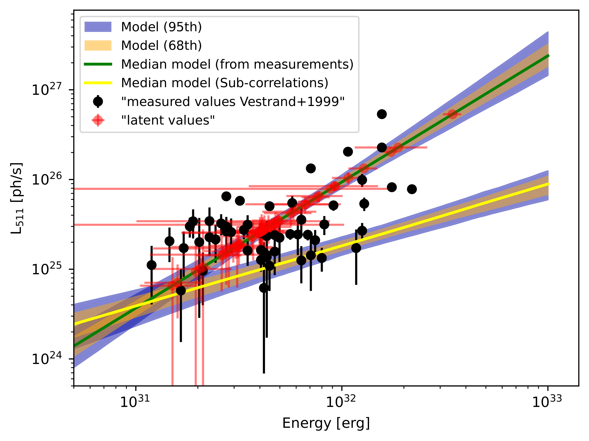
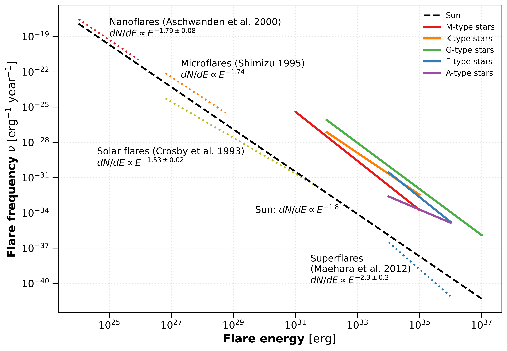
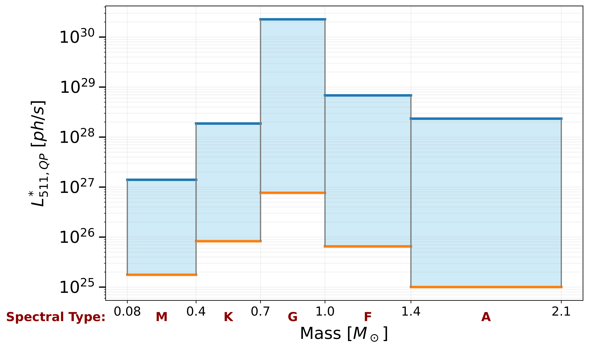
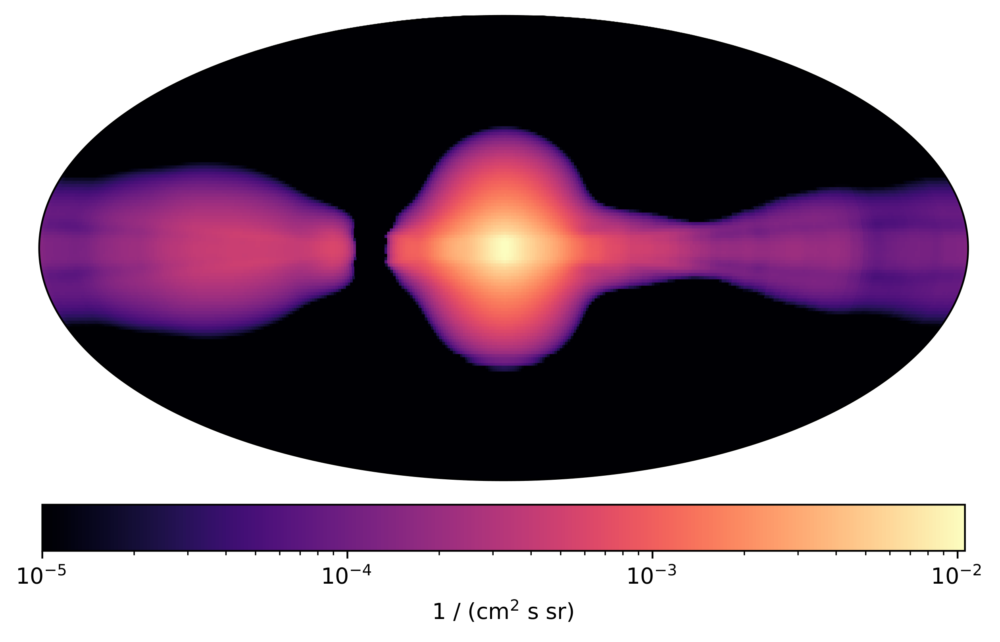
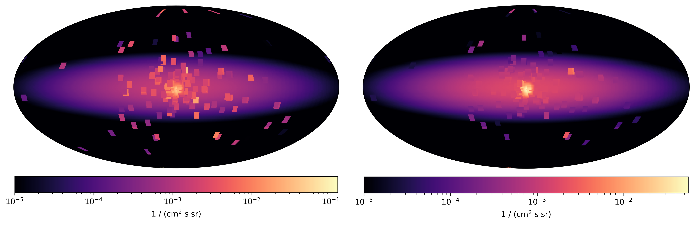
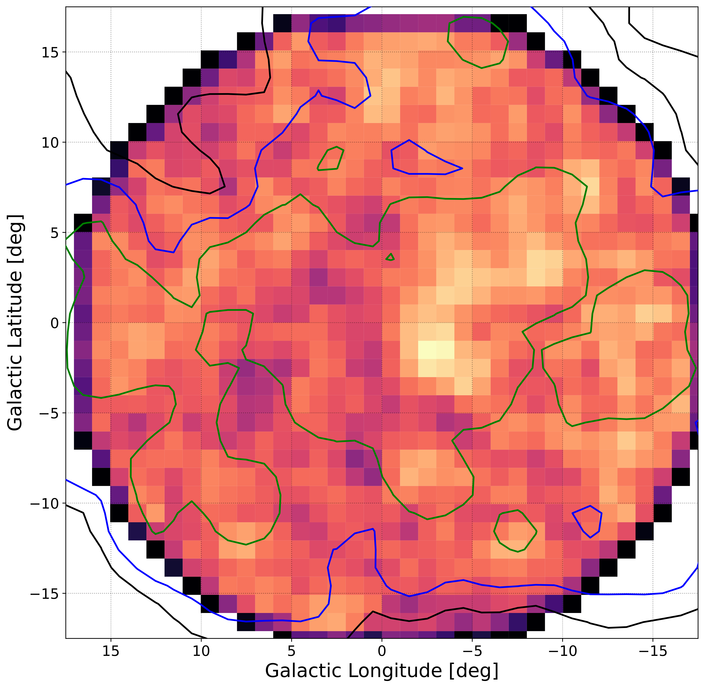

生成时间：2026-07-15T11:12:39+08:00
今日保留论文数：6
内容构成：今日新文 6 篇；补充推荐 0 篇；经典旧文精读 0 篇
高能天体物理重点
1. Gamma-ray Modes in a Transitional Pulsar
- 来源：arXiv / astro-ph.HE
- 链接：https://arxiv.org/abs/2607.13019v1
- 作者：Maksat Satybaldiev, Manuel Linares
- 评分：novelty 9/10，importance 8/10，relevance 10/10，final 10.00/10
- 推荐理由：发现PSR J1023+0038中与X射线模态反相关的Fermi-LAT GeV伽马射线模态，直接涉及伽马射线天文和tMSP辐射机制，并挑战现有盘-脉冲星风模型，优先阅读。
中文题目：过渡型毫秒脉冲星中的伽马射线模态
做了什么：这篇论文研究首个确认的过渡型毫秒脉冲星 PSR J1023+0038 在吸积盘态下的模态切换。作者用同时段的 X 射线观测把系统分成 X 射线高模态和低模态，再把对应时间窗内的 Fermi-LAT 数据叠加，发现 GeV 伽马射线也随模态变化，而且与 X 射线反相关：X 射线低模态时伽马射线更亮，X 射线高模态时伽马射线更暗。这一结果挑战了把 GeV 辐射主要归因于脉冲星风与盘相互作用的主流解释，作者提出喷流可能主导了低模态中的 GeV 辐射。
为什么重要：PSR J1023+0038 是研究自转供能与吸积供能如何共存、竞争和切换的基准源。此前模态切换主要在 X 射线、光学和射电中被讨论；如果 GeV 伽马射线也按同一秒到分钟级模态发生可测变化，就说明高能辐射区与内盘、磁层和喷流的耦合比通常假设更直接。反相关尤其关键，因为它不是简单的“吸积越强，高能越亮”，而是要求模型同时解释 X 射线、射电和 GeV 能段的相位关系。
理论 / 观测 / 仪器方法价值：对理论而言，论文给出了一个可检验的判据：脉冲星风-盘相互作用模型若预言 X 射线高模态伴随更强 GeV 辐射，就与观测方向相反。对观测而言，它展示了如何利用 X 射线定义的短时状态去折叠 Fermi-LAT 的低光子统计数据，从而在长时间积累中恢复模态相关的 GeV 信号。对方法而言，这类跨能段条件叠加比普通长期光变更适合寻找弱但状态依赖的高能成分。
为什么应该关注：如果你关心毫秒脉冲星回收、低质量 X 射线双星向射电脉冲星的演化、磁层截断盘、propeller、喷流以及 GeV 源的辐射机制，这篇文章都值得看。它把一个长期争议的问题变成了更尖锐的观测约束：在 PSR J1023+0038 的盘态中，GeV 光子到底来自脉冲星风、盘-磁层边界，还是与射电亮低模态相关的外流/喷流？
展开详细解读：文章讲解、背景、理论、重点章节、图表与相关工作
文章详细讲解
科学问题：过渡型毫秒脉冲星是少数能在射电脉冲星态和低光度吸积盘态之间切换的系统。PSR J1023+0038 在盘态中表现出典型 X 射线高、低、耀发模态，其中高模态通常占据较大时间比例，低模态持续时间较短但与射电增强和可能的外流联系紧密。过去的核心问题是，盘态中增强的 GeV 伽马射线究竟来自恢复的旋转供能脉冲星风与盘物质碰撞，还是来自吸积/喷流相关过程。
作者怎么做：论文利用同时覆盖的 X 射线观测来给每个时间段贴上模态标签，而不是直接在 Fermi-LAT 的稀疏 GeV 光子中寻找秒到分钟级切换。随后，他们把处在 X 射线高模态和低模态的 Fermi-LAT 曝光分别叠加，进行能谱或通量估计。这个策略的关键是把高时间分辨率的 X 射线状态信息用作外部条件变量，降低 LAT 光子统计不足带来的模态识别困难。
关键结果：他们报告了 PSR J1023+0038 的伽马射线模态，并发现其方向与 X 射线相反。X 射线低模态对应更高的 GeV 通量，X 射线高模态对应更低的 GeV 通量。这不是一个平凡的多波段同亮同暗关系，而是反相关。由于低模态还常与射电增强联系在一起，作者认为 GeV 高态更可能与喷流或外流辐射有关，而不是单纯的脉冲星风-盘相互作用。
为什么这挑战现有模型：已有较成熟的解释框架通常把盘态 GeV 辐射归因于脉冲星风与内盘或盘风的相互作用，通过同步辐射和逆康普顿过程产生高能光子。这类图像往往预期当盘-磁层相互作用强、X 射线高模态明显时，GeV 辐射也应更强。本文发现的反相关意味着几何、粒子加速区或主导辐射机制必须重写，至少不能只用一个随吸积功率单调变化的风-盘碰撞区解释。
局限和下一步：Fermi-LAT 在 GeV 波段的单光子统计较低，模态叠加依赖同时 X 射线覆盖、状态划分阈值和背景模型。需要检查不同时间段、能段、事件类、LAT 响应版本以及邻近背景源处理是否改变结论。下一步最直接的是扩大同时 X 射线覆盖、加入射电和光学偏振/快光变约束，并比较其他过渡型毫秒脉冲星是否也存在同样的 GeV-X 射线反相关。
关键结果是怎么做出来的
本文最重要的证据链从样本定义开始：作者不是把 PSR J1023+0038 的整个盘态 Fermi-LAT 数据混在一起，而是选取有同时 X 射线观测的时段。X 射线光变先被分成高模态、低模态以及可能的耀发或过渡区间；只有这些状态标签确定后，才去抽取同一时间窗内的 LAT 光子和曝光。这样做牺牲了 LAT 的总曝光时间，但避免了把物理状态不同的辐射混合成一个平均谱。
统计上，LAT 数据通常需要使用泊松似然而非简单计数率比较，因为源光子少、背景强、点扩散函数随能量变化，且银河弥散背景和邻近源会贡献显著计数。论文的核心比较应是高模态时间窗与低模态时间窗的源通量、谱参数或检验统计量差异。读者应重点看作者是否给出两种模态下的通量置信区间、似然剖面、以及通量比显著偏离 \(1\) 的置信度。
支撑结论的关键图表通常包括：X 射线光变和模态划分图、按模态叠加的 LAT 谱能量分布、两种模态的似然或通量比较、以及与模型预言的方向性对照。尤其要看低模态 GeV 增亮是否来自少数异常强时间段，还是在多个观测窗口中稳定出现。若论文列出分段检验或 jackknife 检验，应该优先检查去掉某个 X 射线观测段后结论是否仍成立。
系统误差方面，LAT 分析最敏感的是弥散背景模板、邻近源光谱、ROI 选择、能量下限、事件类和仪器响应函数。模态划分的系统误差则来自 X 射线阈值、模态过渡边界、耀发排除方式以及不同 X 射线望远镜的交叉定标。若低模态占空比较低，那么少量误分类就可能稀释或伪造反相关，因此读者应检查作者是否测试了更严格的低模态窗口和排除过渡时间后的结果。
模型比较的关键不是只问“是否探测到源”，而是问“低模态通量是否显著高于高模态通量”。对应统计量可以是两模态独立通量拟合与共同通量拟合之间的似然差，也可以是通量比的后验分布。本文的物理结论建立在反相关方向上，因此即使总源探测显著，也必须确认模态差异本身的显著性足够强，并且不是由曝光、背景或少数高能光子主导。
展开背景、理论、公式、模型、章节和图表导读
背景知识
PSR J1023+0038 是过渡型毫秒脉冲星的原型之一。它曾被识别为射电脉冲星，也进入过带有低光度吸积盘的状态，因此直接连接了“低质量 X 射线双星把中子星自旋加速到毫秒周期”和“回收毫秒脉冲星重新以旋转能供能”这两类图像。它的重要性在于，我们不是通过群体统计推断演化路径，而是在同一个源上看到状态转换。
过渡型毫秒脉冲星的盘态并不像标准明亮低质量 X 射线双星。其 X 射线光度通常远低于经典持续吸积到中子星表面的情形，却有稳定的快速模态切换。高模态、低模态和耀发模态之间的切换提示内盘半径、磁层半径、共转半径和光柱半径之间的相对位置不断变化。这个系统处在吸积、propeller 外抛和旋转供能磁层活动的交界处。
GeV 伽马射线是该领域长期难题。PSR J1023+0038 在形成盘后 GeV 辐射增强，这说明盘不是简单地遮蔽或关闭高能过程，而可能提供新的粒子加速和辐射场。此前许多模型把增强解释为脉冲星风与盘或盘风碰撞，产生同步辐射、逆康普顿辐射或曲率辐射变体。但这些模型往往面临一个问题：它们需要同时解释 X 射线模态、射电脉冲消失或恢复、射电增强以及 GeV 平均光度。
为什么现在值得重新看，是因为多波段同时观测积累已经足够丰富，可以不再只比较“盘态平均值”和“射电脉冲星态平均值”，而是按短时模态分解高能信号。Fermi-LAT 单独看很难给出分钟级光变，但如果用 X 射线定义状态，再长时间叠加同类状态，就能检测状态依赖的弱信号。这是一个方法上的进步。
常见误区之一是把 X 射线高模态等同于“吸积率更高”，再把所有高能辐射都随吸积率单调增加。实际上，模态可能反映的是内盘-磁层边界条件、开磁力线比例、物质外抛效率和辐射区几何的变化。另一个误区是把 GeV 辐射必然归为脉冲星磁层辐射；在盘态中，喷流、盘风和终止激波都可能参与。
基础理论 / 方法脉络
基本物理图像是，一个快速自转、强磁场中子星周围存在低光度吸积盘。盘向内输运角动量和质量，中子星磁场在某个磁层半径截断盘。如果磁层半径接近共转半径或光柱半径，系统就会在吸积到表面、离心外抛和旋转供能外流之间摇摆。X 射线模态很可能是这些边界条件变化的观测表现。
在 X 射线中，高模态常被理解为较稳定的内盘-磁层耦合状态，低模态则可能对应吸积被抑制、物质外抛增强或开磁力线结构改变。射电低模态增亮倾向于支持外流或喷流增强的解释。本文的核心创新是问：GeV 辐射跟随哪一个状态？如果它跟随 X 射线高模态，风-盘碰撞或内盘辐射模型更自然；如果它跟随 X 射线低模态，则喷流或外流区可能更重要。
Fermi-LAT 的观测不是直接测通量，而是记录每个光子的能量、方向和时间。分析时需要给定 ROI 内所有源和背景的空间-能谱模型，通过仪器响应函数把模型光子通量卷积成预期计数。由于 LAT 在短时间窗内对单个弱源的计数很少，模态分析必须依赖长时间叠加，并用 X 射线时间标签条件化数据集。
本文涉及的关键量包括两种模态下的积分能量通量或光子通量、谱指数、检验统计量、通量比和反相关显著性。读者应注意，所谓伽马射线模态不是 LAT 直接逐次看到快速开关，而是“在由 X 射线定义的高/低模态时间集合中，LAT 的最大似然通量显著不同”。这是合理但也依赖条件选择的统计陈述。
主要退化关系包括源通量与弥散背景归一化的退化、谱指数与低能阈值选择的退化、低模态曝光较少导致的通量不确定性放大，以及模态误分类对通量差异的稀释。若喷流模型被采用，还会有电子能谱、磁场强度、多普勒因子和靶光子场之间的退化；单靠 GeV 谱很难唯一确定辐射机制。
公式与推导
第一步从旋转供能中子星的可用功率出发。若中子星转动惯量为 \(I\)、角速度为 \(\Omega\)、自转减慢率为 \(\dot{\Omega}\)，自转能损失率为
这里 \(\dot{E}_{\rm sd}\) 是脉冲星风和磁层活动可调用的能量库；若 GeV 辐射来自脉冲星风-盘相互作用，其辐射功率不应超过这个量的某个效率因子。
第二步描述盘与磁层的几何竞争。磁压与吸积流动压平衡给出量级上的磁层半径
其中 \(\xi\) 是几何系数，\(\mu\) 是磁偶极矩，\(M\) 是中子星质量，\(\dot{M}\) 是盘质量流率。这个关系说明小幅 \(\dot{M}\) 变化会移动内盘边界，从而改变模态。
第三步比较共转半径和光柱半径：
当 \(r_{\rm m}
第四步把可观测的高能通量与光度联系起来。若源距离为 \(d\)，在能段 \(E_1\) 到 \(E_2\) 的能量通量为 \(G_{\gamma}\)，各向同性等效伽马射线光度为
比较 \(L_{\gamma}\) 与 \(\dot{E}_{\rm sd}\) 或吸积功率 \(GM\dot{M}/R\)，可以判断能量预算是否合理。
第五步给出辐射模型的基本谱形。LAT 分析中常用幂律或带截止幂律近似源谱，例如
其中 \(K\) 是归一化，\(E_0\) 是枢轴能量，\(\Gamma\) 是光子谱指数，\(E_{\rm cut}\) 是截止能量。模态差异可表现为 \(K\)、\(\Gamma\) 或 \(E_{\rm cut}\) 的变化。
第六步把物理通量转成 LAT 预期计数。对第 \(i\) 个能量和空间 bin，模型预期计数可写为
其中 \(T\) 是曝光时间，\(A_{\rm eff}\) 是有效面积，\(R_i\) 是能量和方向响应，\(\Phi\) 是天空模型通量，\(b_i\) 是背景计数，\(\boldsymbol{\theta}\) 是源和背景参数。
第七步使用泊松似然估计模态通量：
其中 \(n_i\) 是观测计数。高模态和低模态分别有各自的 \(\lambda_i^{\rm H}\) 与 \(\lambda_i^{\rm L}\)，从而得到 \(G_{\gamma}^{\rm H}\) 与 \(G_{\gamma}^{\rm L}\)。
第八步定义源探测或模态差异的检验统计量。源探测常用
模态差异则可用共同通量模型和独立通量模型的似然差表示：
若 \(G_{\gamma}^{\rm L}>G_{\gamma}^{\rm H}\) 且 \(\Delta TS_{\rm mode}\) 足够大，就支持伽马射线与 X 射线反相关。
第九步把结论压缩成通量比：
本文的物理要点是 \(\mathcal{R}_{\gamma}>1\) 而 \(\mathcal{R}_{X}<1\)。这组不等式说明 GeV 辐射不随 X 射线亮度同向变化，对单区风-盘模型构成直接约束。
模型拟合 / 应用方法
这类工作的拟合分成两层。第一层是 X 射线模态分类：对 X 射线光变设定计数率或通量阈值，把时间划分为高模态、低模态、耀发和过渡段。这里拟合或分类的对象不是物理谱模型，而是时间序列状态；其系统误差来自阈值选择、仪器灵敏度、背景扣除和不同观测段的计数率标定。
第二层是 LAT 似然拟合。对每个模态时间集合，作者需要建立包含 PSR J1023+0038、邻近目录源、银河弥散背景和各向同性背景的空间-能谱模型。拟合量通常包括目标源归一化、可能的谱指数、背景归一化，以及在某些设置中邻近亮源的谱参数。由于模态切分后曝光减少，谱形参数可能需要固定或加强约束，否则通量与谱指数会强烈退化。
参数估计的核心是泊松似然或其剖面似然。实际读图时，应该看高模态和低模态通量置信区间是否重叠、通量比的误差是否明显排除 \(1\)、以及独立通量模型相对共同通量模型的似然提升。若论文采用贝叶斯表达，则对应要看 \(P(G_{\gamma}^{\rm L}>G_{\gamma}^{\rm H})\) 或通量比后验；若采用频率学表达，则看 \(\Delta TS_{\rm mode}\) 或相应置信区间。
重要退化关系包括：低能 LAT 光子数量多但角分辨率差，因此源通量容易与银河弥散背景混淆；高能光子定位好但数量少，容易受单个光子影响。谱指数变软会把更多权重放到低能端，从而增加背景退化。若只在低模态出现少量高能光子，统计显著性可能对事件选择、ROI 半径和时间窗边界敏感。
模型可能失败的方式也很清楚。若反相关只在某一小段同时观测中出现，可能是偶然背景起伏或未建模邻近源变化。若不同能段给出相反趋势，则简单喷流解释也不够。若高模态和低模态的谱形差异很大，只比较积分通量可能掩盖物理机制。因此最佳实践是报告分能段 SED、剖面似然、不同背景模板测试和去一法稳健性检验。
重点章节 / 结果段落怎么读
数据和样本部分应先读。重点看作者使用了哪些 X 射线观测来定义模态，与 Fermi-LAT 的时间重叠有多少，如何排除耀发和过渡段，以及高、低模态各自的有效曝光。没有这些信息，就无法判断 LAT 模态叠加是否可靠。
X 射线模态识别方法是第二个重点。读者应检查阈值是否沿用过往 PSR J1023+0038 文献，是否考虑不同仪器的计数率转换，是否给出模态占空比和典型持续时间。尤其要看低模态样本是否足够干净，因为本文的伽马射线高态正是由 X 射线低模态定义出来的。
Fermi-LAT 分析段落是论文技术核心。应重点看 ROI、能量范围、事件类、仪器响应函数、弥散背景模型、源目录版本、自由参数设置和似然方法。若作者比较了不同分析配置，这些稳健性检验比单个最佳拟合值更重要。
结果部分要按“总探测—分模态通量—通量比—显著性”的顺序读。不要只看低模态通量较高的陈述，还要看置信区间、似然差和谱形假设。若有 SED 图，应检查反相关是否由整个 GeV 能段支持，还是集中在某个能段。
讨论部分的关键是模型判别。作者把结果与脉冲星风-盘相互作用模型和喷流模型比较。读者应关注他们是否明确说明：现有模型具体预言哪一个模态更亮、为什么被反相关排除或削弱，以及喷流解释还需要哪些额外观测来确认。
建议重点查看的图表
-
X 射线光变和模态划分图：看高模态、低模态、耀发和过渡段的阈值是否清楚，低模态窗口是否避开边界。
-
Fermi-LAT 按模态叠加的计数图或 TS 图：看目标源位置的信号是否在低模态更明显，是否有邻近源或弥散背景残差。
-
两种模态的 GeV 谱能量分布：看低模态相对高模态的增亮是否跨多个能量 bin，而不是单个 bin 驱动。
-
通量或似然剖面比较图：看 \(G_{\gamma}^{\rm L}\) 与 \(G_{\gamma}^{\rm H}\) 的置信区间、通量比 \(\mathcal{R}_{\gamma}\) 是否排除 \(1\)。
-
模态占空比和曝光表：看高、低模态的 LAT 曝光、X 射线覆盖和有效时间是否相差过大。
-
稳健性检验表：看改变能量范围、背景模型、ROI、事件类或排除个别观测段后，反相关方向是否保持。
-
与理论模型的对照图：看风-盘模型和喷流模型分别预言的模态亮度顺序，以及观测点落在哪一侧。
关键图表逐图导读
图 1：通常应是 X 射线光变或多个观测段的计数率分布。横轴为时间或相位化后的观测时间，纵轴为 X 射线计数率/通量。高模态和低模态阈值若用水平线标出，读者要看低模态是否足够分离，过渡段是否被剔除。读图陷阱是把阈值附近的点都当作干净模态；这些点若进入 LAT 叠加，会稀释真实差异。
图 2：可能是 LAT ROI 的模型图、残差图或 TS 图。横纵轴为空间坐标，颜色代表计数、模型预测或 \(TS\)。应检查 PSR J1023+0038 位置是否出现与低模态相关的增强，并确认残差不是沿银河弥散背景结构延伸。读图陷阱是低能 LAT 的点扩散函数较宽，位置上看似重合并不自动等于源归属可靠。
图 3：按 X 射线模态分组的 GeV SED 最关键。横轴为能量，纵轴为 \(E^2 dN/dE\) 或能量通量；数据点代表各能量 bin 的似然通量，箭头代表上限，模型线代表幂律或截止幂律。主要结论应是低模态曲线整体高于高模态。读图陷阱是积分通量差异可能由低能大误差点或单个高能 bin 主导，因此要结合似然剖面。
图 4：通量比或剖面似然图应直接支撑反相关。横轴可能为 \(G_{\gamma}\) 或 \(\mathcal{R}_{\gamma}\)，纵轴为 \(-2\Delta\ln\mathcal{L}\) 或后验概率密度。若 \(\mathcal{R}_{\gamma}=1\) 落在高置信区间之外，模态差异才有强统计意义。读图陷阱是把两次独立探测的 \(TS\) 差别误解为通量差异显著性；真正需要的是共同通量模型与独立通量模型的比较。
图 5：若论文给出多波段模式示意或模型比较图，应看 X 射线、射电和 GeV 的相对亮暗是否一致。横轴可能是模态，纵轴是归一化通量。本文物理图像的关键是低模态射电和 GeV 增强，而 X 射线降低；这支持喷流/外流关联。读图陷阱是模型示意不等于拟合结果，必须回到前面的数据图确认统计约束。
论文原图 / 可嵌入图片
（未提供 verified figure；为避免编造图片链接，本节只在能确认官方图片 URL 或成功提取论文原图时嵌入图片。）
强相关工作
这篇工作直接连接过渡型毫秒脉冲星的几条文献线索。第一类是 PSR J1023+0038 的历史观测：从低质量 X 射线双星候选到射电脉冲星，再到带盘状态和 GeV 增强。检索关键词建议使用 “PSR J1023+0038 transitional millisecond pulsar gamma-ray disk state Fermi LAT X-ray modes”。这些同源研究是理解本文为何重要的必要背景，因为本文不是发现该源有 GeV 辐射，而是把 GeV 辐射进一步分解到 X 射线模态上。
第二类是理论模型，包括脉冲星风-盘相互作用、propeller、磁层门控吸积和喷流辐射。与本文形成张力的是那些预言 X 射线高模态应伴随更强 GeV 辐射的模型；同向支持的是把低模态射电增强解释为外流或喷流的工作。检索关键词可用 “pulsar wind disk interaction tMSP inverse Compton synchrotron”, “propeller transitional millisecond pulsar”, “J1023 radio bright X-ray low mode jet”。
第三类是同类源比较，例如 XSS J12270-4859 和 IGR J18245-2452 等过渡型毫秒脉冲星。若其他源也能通过同时 X 射线和 LAT 叠加发现类似反相关，那么喷流解释会更有普适性；若只有 PSR J1023+0038 如此，则可能涉及几何、倾角或源特有环境。检索关键词可用 “XSS J12270-4859 gamma ray modes”, “IGR J18245-2452 transitional pulsar”, “tMSP Fermi LAT population”。
同一事件 / 同类源线索：
- https://arxiv.org/abs/2607.13019
- https://arxiv.org/pdf/2607.13019
- https://www.atnf.csiro.au/research/pulsar/psrcat/
相似工作：
基础理论 / 方法工作：
相反观点 / 张力线索：
（未提供）
2. Identifying potentially missed extended sources in the Fermi-LAT 4FGL Catalog using clustering analysis
- 来源：arXiv / astro-ph.HE
- 链接：https://arxiv.org/abs/2607.12776v1
- 作者：Giovanni Cozzolongo, Alison M. W. Mitchell, Samuel T. Spencer, Dmitry V. Malyshev, Tim Unbehaun
- 评分：novelty 8/10，importance 8/10，relevance 10/10，final 9.70/10
- 推荐理由：利用聚类和Fermipy似然检验系统寻找4FGL中遗漏的扩展GeV源，发现新的扩展源候选；直接服务Fermi-LAT源表、银河面伽马射线和TeV对应体研究，强相关。
中文题目：用聚类分析在 Fermi-LAT 4FGL 星表中寻找可能漏识别的扩展源
做了什么：这篇文章把 Fermi-LAT 4FGL 星表中彼此靠近、且包含未认证源的点源条目当作线索，用 DBSCAN 聚类先找出候选“源团”，再用 Fermipy 对每个源团做似然分析，比较“多个点源”与“一个扩展源”哪种解释更好。作者在 \(5\,\mathrm{GeV}\) 到 \(1\,\mathrm{TeV}\) 能段、以 \(\varepsilon=0.3^\circ\) 的连接尺度找到 \(48\) 个聚类，包含 \(124\) 个 4FGL 源；经过质量筛选后保留 \(8\) 个重点候选，全部更偏好扩展源模型。其中 \(5\) 个与 2FGES 或 HGPS 中的已知扩展源重合，另外 \(3\) 个没有对应体，是新的 GeV 扩展源候选。核心意义在于：一些真实的弥散或扩展 \(\gamma\) 射线源可能在星表构建时被拆成多个点源，空间聚类加似然模型比较可以系统地把它们找回来。
为什么重要：Fermi-LAT 星表是高能天体物理中使用最广的基础数据产品之一，未认证源数量很大。如果其中一部分其实是同一个扩展天体被点源模型“切碎”，那么源计数、未认证源族群、银河面弥散辐射建模、脉冲星风云和超新星遗迹统计都会受到影响。本文重要之处不是发现某一个特别亮的新源，而是提出并验证了一条可重复的筛选管线：先从星表层面寻找异常近邻的未认证源团，再回到事件数据层面做空间-能谱似然检验。
理论 / 观测 / 仪器方法价值：对观测和方法的价值主要有三点。第一，它为 4FGL 未认证源提供了一种优先级排序：不是逐个盲搜，而是优先检查那些在角尺度上可疑成团的源。第二，它给扩展源搜索提供了与传统残差图、模板扫描互补的入口，尤其适合银河面拥挤区域。第三，它提醒使用 4FGL 做族群统计或多波段关联时，不能把每个 catalog point source 都机械地看成独立天体，局部模型误设会直接传播到物理解释。
为什么应该关注：如果你研究银河系高能源、未认证 \(\gamma\) 射线源、TeV 对应体、脉冲星风云、超新星遗迹，或用 4FGL 做人口统计，这篇文章都值得看。它告诉你哪些 4FGL 源可能不是独立源，而是同一扩展结构的碎片；也展示了如何把机器学习式的空间聚类与 Fermi-LAT 标准似然分析结合起来，避免只凭天图印象判断“这里像一个扩展源”。
展开详细解读：文章讲解、背景、理论、重点章节、图表与相关工作
文章详细讲解
科学问题：Fermi-LAT 的 4FGL 星表包含数千个 \(\gamma\) 射线源，其中相当一部分仍未与低能波段天体可靠关联。星表构建通常需要在复杂背景上放置点源、扩展源和弥散模板；在银河面附近，点扩散函数、弥散背景、真实扩展结构和源拥挤会互相混淆。本文关注一个具体问题：某些相互靠得很近的未认证 4FGL 点源，是否其实是同一个扩展源被星表算法分裂成多个点源？HESS J1813-178 被重新解释为单个扩展源的案例，是这项系统搜索的直接动机。
作者怎么做：他们没有从原始事件图像盲目扫描整个天空，而是先利用 4FGL 星表的源位置做“候选生成”。在 \(5\,\mathrm{GeV}\) 到 \(1\,\mathrm{TeV}\) 能段选取相关 4FGL 源，用 DBSCAN 算法以 \(\varepsilon=0.3^\circ\) 的连接尺度寻找空间聚类。每个聚类必须包含至少一个未认证源，并且最多允许包含一个特定类别的已认证点源或扩展源，例如脉冲星、脉冲星风云或超新星遗迹相关源。随后作者把聚类带回 Fermi-LAT 事件数据中，用 Fermipy 建立局部区域模型，比较多点源模型与单扩展源模型的似然，并拟合扩展源的形态和能谱。
关键结果：初筛得到 \(48\) 个聚类，共包含 \(124\) 个 4FGL 源。经过数据质量、局部建模、显著性和可解释性等筛选后，\(8\) 个聚类进入重点分析；对这 \(8\) 个聚类，单一扩展源模型在统计上均优于多个 catalog 源的模型。作者还改变 DBSCAN 连接尺度到 \(0.4^\circ\) 和 \(0.5^\circ\)，发现这 \(8\) 个候选的核心源仍然保留，说明它们不是 \(\varepsilon=0.3^\circ\) 的偶然产物。与第二版 Fermi Galactic Extended Sources Catalog 和 H.E.S.S. Galactic Plane Survey 交叉匹配后，\(5\) 个候选与已知扩展源重合，另外 \(3\) 个没有 2FGES 或 HGPS 对应体，可视为新的 GeV 扩展源候选；其中一个候选的形态对星际弥散发射模型比较敏感。
局限和下一步：本文的结果依赖于 4FGL 源表本身、DBSCAN 的角尺度选择、银河面弥散背景模型和 Fermipy 局部拟合的系统误差。\(\gamma\) 射线扩展源的判定在银河面尤其容易受到弥散辐射残差、邻近强源、能谱假设和未建模源的影响，因此“扩展源模型更好”并不自动等同于已经完成物理认证。下一步需要多波段交叉检查，例如射电壳层、X 射线 PWN、分子云、TeV 源、脉冲星自转能损失率和距离约束；也需要在未来 4FGL 版本、2FGES 后续版本或 CTA/LHAASO 观测中检验这些候选是否稳定存在。
关键结果是怎么做出来的
本文最核心的证据链从样本选择开始。作者从 Fermi-LAT 4FGL 星表中挑选在 \(5\,\mathrm{GeV}\) 到 \(1\,\mathrm{TeV}\) 能段相关的源，重点关注未认证源，并允许每个聚类中最多混入一个与特定高能源族有关的已认证源或已知扩展源。选择高能段的实际好处是 Fermi-LAT 的点扩散函数随能量提高而变窄，源混叠相对减轻；代价是光子统计变少，所以后续似然检验必须谨慎。
候选生成使用 DBSCAN，而不是预先规定固定数量的簇。给定连接尺度 \(\varepsilon=0.3^\circ\)，空间上互为近邻的 4FGL 源会被归为同一个聚类，孤立源则被视为噪声。作者得到 \(48\) 个聚类，合计 \(124\) 个源，每个聚类至少含一个未认证源。这一步本身不证明扩展发射，只是把“多个点源是否可能是一个扩展源”的问题压缩成有限数量的局部检验。
关键统计比较发生在 Fermipy 的局部似然分析中。对每个通过质量筛选的聚类，作者建立两个竞争模型：一个保留多个 4FGL 点源，另一个用单个扩展模板替代这些点源，并让源的位置、空间尺度和能谱参数在合理范围内优化。扩展源是否被偏好通常由似然比或类似 test statistic 的量判断，本质上是比较 \(\log \mathcal{L}_\mathrm{ext}\) 与 \(\log \mathcal{L}_\mathrm{multi}\) 的改进是否足以补偿额外或不同的模型自由度。
最终进入质量样本的 \(8\) 个聚类全部偏好扩展模型，这是文章最重要的结果。作者没有只依赖单一 DBSCAN 参数，而是把连接尺度放宽到 \(0.4^\circ\) 和 \(0.5^\circ\) 做稳健性检查；这 \(8\) 个聚类的核心成员仍被找回，说明候选不是由一个过窄连接尺度任意切分造成的。与 2FGES 和 HGPS 的交叉匹配提供外部验证：\(5\) 个候选与已知扩展源相符，说明方法确实能重新发现真实扩展结构；剩余 \(3\) 个则构成新的候选清单。
主要系统误差来自银河弥散发射模型、邻近源建模、能谱形式、ROI 边界和 LAT 响应函数。尤其在银河面，弥散模型的小尺度残差可能被扩展模板吸收，造成虚假的扩展偏好。作者指出其中一个新候选的形态依赖于星际发射模型，这一结果应被视为谨慎候选而非定论。读者应重点检查每个候选的 TS 图、残差图、扩展半径置信区间、与替代弥散模型的比较，以及点源替代模型下是否仍有结构性残差。
展开背景、理论、公式、模型、章节和图表导读
背景知识
Fermi-LAT 自 \(2008\) 年发射以来持续巡天，建立了从 MeV 到 GeV 能段最重要的全天 \(\gamma\) 射线源表。4FGL 星表把观测到的 \(\gamma\) 射线超额分解为点源、扩展源和弥散背景，并给出位置、能谱、变源性和多波段关联信息。对很多天体物理研究者来说，4FGL 是源样本的起点，而不是终点。
未认证源一直是 Fermi-LAT 科学中的难题。它们可能是暗弱脉冲星、脉冲星风云、超新星遗迹、活动星系核、星形成区、分子云照亮区，或仅仅是弥散模型不完善留下的残差。在银河面，源密度高、背景强、吸收和混淆严重，多波段认证尤其困难。若真实辐射区域具有角向延展，而建表流程用多个点源局部拟合它，星表就会产生一组彼此靠近、看似独立但物理上可能同源的条目。
扩展源识别在 \(\gamma\) 射线天文学里并不新鲜。超新星遗迹壳层、PWN、附近星系、星形成区和银河中心附近结构都可能呈现角向扩展。但系统识别扩展源需要同时处理仪器点扩散函数、曝光变化、能谱形状、弥散发射和邻近源。2FGES 等目录已经专门搜索 Fermi 银河扩展源，H.E.S.S. Galactic Plane Survey 则在 TeV 能段提供了许多扩展源参照。本文的不同点是：它从 4FGL 点源的空间聚类反推可能漏掉的扩展源，而不是从残差图从零开始扫描。
为什么现在值得重看？一方面，Fermi-LAT 积累了更长时间的曝光，高能光子统计更好；另一方面，4FGL 的源数量不断增加，拥挤区域中把扩展发射拆成多个点源的可能性也更值得系统评估。机器学习和聚类算法可以给星表层面的异常模式提供自动化筛选，而标准 LAT 似然分析则负责最后的物理和统计检验。
一个常见误区是把“未认证源聚在一起”直接等同于“发现扩展源”。空间接近只是线索：多个真实点源、弥散残差、星表构建中的局部自由度、或同一星形成复合体内多个独立加速器，都可能造成近邻源团。另一个误区是认为扩展模板的似然更高就自动证明了单一天体身份；实际上，扩展模板可能只是更灵活地吸收了未建模背景。因此本文的价值恰恰在于把候选生成、似然比较、外部目录交叉匹配和系统误差讨论放在同一条证据链里。
基础理论 / 方法脉络
从物理图像看，Fermi-LAT 观测到的是天空中不同方向和能量的 \(\gamma\) 射线计数。一个理想点源经过仪器点扩散函数卷积后，在计数图上也会呈现有限宽度；一个真实扩展源则是在其本征角分布再与点扩散函数卷积后形成更宽或形状不同的计数分布。要区分两者，必须同时使用能量信息，因为 LAT 的角分辨率、有效面积和背景组成都随能量改变。
本文选择 \(5\,\mathrm{GeV}\) 到 \(1\,\mathrm{TeV}\) 的高能段，是为了利用更窄的点扩散函数降低混淆。在较低能量，点扩散函数较宽，多个近邻点源和一个扩展源更难区分；在较高能量，统计量降低，但空间信息更干净。扩展源搜索常在这两者之间折中：高能段更有利于形态判定，宽能段更有利于能谱显著性。
DBSCAN 的角色不是物理建模，而是候选选择。它根据角距离把源表中的点聚成簇，参数 \(\varepsilon\) 定义近邻半径，最小成员数定义一个簇是否成立。与 \(k\)-means 等算法不同，DBSCAN 不要求预先指定簇数量，也允许噪声点存在，适合在全天星表中寻找局部过密结构。本文的 \(\varepsilon=0.3^\circ\) 大致对应 Fermi-LAT 高能段下可疑混叠和扩展源尺度的经验选择。
真正的物理判断来自似然模型比较。多点源模型把每个 4FGL 条目写成独立空间模板加能谱；扩展源模型则用一个圆盘、高斯或其他扩展模板描述整个区域，并重新优化能谱和形态参数。若扩展模型显著提高似然，并且残差图不再显示系统性结构，就说明“一个扩展源”是更经济或更符合数据的解释。
关键退化关系包括：扩展半径与点扩散函数宽度的退化、扩展源通量与银河弥散背景归一化的退化、多个近邻点源能谱与单个弯曲谱扩展源之间的退化，以及源位置与模板大小的退化。选择效应也明显：本文只会发现已经进入 4FGL 且被拆成多个条目的扩展源，对非常弥散、低表面亮度、或没有形成多个 catalog 点源的对象不敏感。
公式与推导
第一步，把 LAT 的观测写成计数模型。对能量 bin \(i\) 和空间像素 \(p\)，期望计数可写为
这里 \(s\) 标记源，\(A_\mathrm{eff}\) 是有效面积，\(T\) 是曝光时间或曝光量的一部分，\(S_s\) 是源的微分强度，\(R_{ip}\) 包含能量响应和点扩散函数，\(B_{ip}\) 是弥散背景与剩余背景。这个式子说明形态、能谱和仪器响应不可分开处理。
第二步，点源模型可写成空间 \(\delta\) 函数与能谱的乘积：
其中 \(\phi_0\) 是归一化，\(E_0\) 是枢轴能量，\(\Gamma\) 是光子谱指数，\(\Omega_0\) 是源位置。经过点扩散函数卷积后，观测到的角分布宽度主要由仪器决定。
第三步，一个简单扩展源可用二维高斯模板表示：
这里 \(\sigma_\mathrm{ext}\) 是本征扩展尺度，\(\Omega_c\) 是中心方向，\(\theta\) 是角距离。若使用均匀圆盘或其他模板，空间因子会改变，但思想相同：用少数形态参数替代多个点源位置。
第四步，观测宽度近似满足卷积尺度关系：
这里 \(\sigma_\mathrm{PSF}(E)\) 是能量相关的点扩散函数宽度。只有当 \(\sigma_\mathrm{ext}\) 相对 \(\sigma_\mathrm{PSF}\) 足够大，并且光子数足够多时，扩展才容易被统计地区分。
第五步，DBSCAN 的近邻关系可形式化为
其中 \(j\) 和 \(k\) 是星表源，\(\theta_{jk}\) 是角距离，\(\varepsilon=0.3^\circ\) 是本文的基准连接尺度。若一个源拥有足够数量的近邻，它可成为核心点；由核心点连通的源构成聚类。这个公式只是候选筛选，不是显著性计算。
第六步，Fermi-LAT 标准拟合通常采用 Poisson 似然：
这里 \(n_{ip}\) 是实际计数，\(\mu_{ip}\) 是模型期望计数。所有源参数、背景归一化和形态参数通过最大化 \(\ln\mathcal{L}\) 估计。
第七步，源显著性常用检验统计量表示：
\(\mathcal{L}_1\) 是包含目标源的模型似然，\(\mathcal{L}_0\) 是不包含目标源的零假设似然。在渐近条件满足时，\(\mathrm{TS}\) 可近似转化为显著性，但边界参数和非嵌套模型会使简单 \(\chi^2\) 解释失效。
第八步，扩展性检验可写为
或在本文语境中比较
前者比较扩展源与单点源，后者比较单扩展源与多个 4FGL 点源。\(\Delta\mathrm{TS}>0\) 表示扩展模型拟合更好，但还要考虑自由度、系统误差和模型是否嵌套。
第九步，残差诊断可用标准化残差近似表示：
若多点源模型下残差呈现连续团块，而扩展模型下残差接近随机噪声，就支持扩展解释；若残差沿银河面或气体模板结构排列，则更可能是弥散背景误差。
第十步，扩展通量可由谱模型积分得到：
这里 \(E_1=5\,\mathrm{GeV}\)，\(E_2=1\,\mathrm{TeV}\) 对应本文主要分析能段。这个积分让读者比较扩展源候选与 4FGL 点源总通量、2FGES 源或 TeV 对应体的能量输出是否一致。
模型拟合 / 应用方法
本文的模型拟合分两层。第一层是星表层面的聚类选择，拟合量不是物理参数，而是由 DBSCAN 参数 \(\varepsilon\)、最小成员数和源类别筛选规则决定的候选集合。作者用 \(\varepsilon=0.3^\circ\) 作为基准，并检查 \(0.4^\circ\) 与 \(0.5^\circ\) 下核心成员是否稳定。这相当于对候选生成过程做超参数稳健性检验。
第二层是 Fermi-LAT 事件数据的似然拟合。每个候选区域都需要一个 ROI 模型，包括目标聚类、周围 4FGL 源、银河弥散模板、各向同性背景，以及可能的扩展模板。拟合量通常包括源通量归一化、谱指数或曲率参数、扩展源中心、扩展半径，以及背景模板归一化。读者应把这些参数理解为共同优化的结果，而不是目标源在固定背景上的简单测量。
模型比较的核心是看扩展模型是否比多个点源模型显著改善似然，并且是否减少结构性残差。由于“多个点源”和“一个扩展源”未必是严格嵌套模型，不能机械地把 \(\Delta\mathrm{TS}\) 当成单一自由度 \(\chi^2\) 显著性。实际判断还要结合残差图、源定位、扩展半径误差、替代背景模型、邻近源自由参数设置和能谱合理性。
主要退化包括扩展源半径与通量归一化的退化：更大的模板可以吸收更多背景，导致通量上升或谱变软；扩展源中心与邻近点源位置的退化：中心移动可能模拟多个点源的不对称分布；目标源通量与银河弥散模板归一化的退化：尤其在低纬度区域，气体柱密度或逆康普顿模型误差会被误认为扩展结构。若某个候选只在一种弥散模型下显著，可信度应降低。
实际应用中，本文的方法可作为未来星表清理和候选源优先排序工具。比如在做未认证源多波段关联时，可先排除或标记那些属于可疑扩展聚类的 4FGL 条目；在做银河面 TeV 对应体搜索时，可把这些候选作为 GeV 形态模板；在准备 CTA 或 LHAASO 跟进时，可优先选择那些在 Fermi-LAT 中扩展显著、且与 TeV 源或非热射电/X 射线结构空间一致的对象。
重点章节 / 结果段落怎么读
数据与样本选择部分应首先阅读。重点看作者如何定义 4FGL 源集合、为什么选 \(5\,\mathrm{GeV}\) 到 \(1\,\mathrm{TeV}\)、哪些源类别被允许进入聚类、以及“每个聚类至少一个未认证源、最多一个特定已认证源”的规则如何影响样本。这个部分决定了本文能发现什么，也决定了它会漏掉什么。
DBSCAN 方法部分是第二个重点。读者应关注 \(\varepsilon=0.3^\circ\) 的物理和经验依据、最小成员数设置、边界条件、银河面与高纬区域是否分开处理，以及作者如何用 \(0.4^\circ\) 和 \(0.5^\circ\) 检查候选稳定性。这里不要把 DBSCAN 结果误读为天体物理显著性，它只是把候选列表缩小。
Fermipy 似然分析部分是论文的核心方法段。要看 ROI 大小、事件选择、仪器响应函数、弥散模型、背景源自由化策略、扩展模板形式、能谱模型，以及多点源模型与单扩展源模型如何比较。任何扩展源候选的可信度都取决于这些细节。
结果部分应按两层读：先看 \(48\) 个聚类和 \(124\) 个源的总体统计，再看 \(8\) 个质量筛选候选的逐源结果。对每个候选，应记录其包含哪些 4FGL 源、扩展模型的最佳中心和尺度、似然改进、残差改善，以及是否与 2FGES 或 HGPS 匹配。
讨论与稳健性检验部分决定结论边界。特别要看作者如何处理与已知扩展源的重合、如何论证 \(3\) 个新候选没有已知对应体、哪些候选受星际弥散发射模型影响，以及他们是否提出了后续多波段或 TeV 检验路径。
建议重点查看的图表
-
DBSCAN 聚类全天图或银河面图：看 \(48\) 个聚类如何分布，是否集中在银河面，是否有明显受源密度或背景复杂度驱动的区域偏差。
-
聚类成员统计表：检查每个聚类包含的 4FGL 源数量、未认证源数量、是否含已认证源、角向跨度和源类别。最关键的是 \(8\) 个质量候选的成员是否真的紧密、是否由单个离群源拉大尺度。
-
\(\varepsilon\) 稳健性诊断：看 \(0.3^\circ\)、\(0.4^\circ\)、\(0.5^\circ\) 下候选核心成员是否保持。如果成员随 \(\varepsilon\) 大幅变化，候选解释会更不稳定。
-
每个候选的 TS 图或计数残差图：比较多点源模型和扩展源模型下残差是否减少，尤其看残差是否从多个局部峰变成随机分布，还是仍沿银河弥散结构排列。
-
似然比较表：检查 \(\ln\mathcal{L}\)、\(\Delta\mathrm{TS}\)、扩展半径、通量和谱指数。要注意似然改进是否来自个别自由参数过拟合，还是伴随稳定的形态改善。
-
与 2FGES 和 HGPS 的交叉匹配图或表：看 \(5\) 个已知对应体的空间重合是否合理，也看 \(3\) 个新候选是否真的避开了已知扩展源区域。
-
弥散模型系统误差图或替代拟合表：特别关注作者提到形态依赖星际发射模型的候选。若扩展半径或中心在不同背景模型下显著漂移，该候选应降级为待确认。
-
能谱能量分布图：看扩展源模型的谱点是否连续、是否由少数高能 bin 驱动、是否与 TeV 上限或对应体测量冲突。
关键图表逐图导读
图 1：如果论文给出 4FGL 源和 DBSCAN 聚类的天空分布图，横轴通常是银经，纵轴是银纬，点或符号表示 4FGL 源，颜色或圈线表示不同聚类。读图时要看候选是否主要贴着银河面，因为这既符合 PWN/SNR 等银河源分布，也意味着弥散背景系统误差更严重。陷阱是把源密度高的区域自动理解为物理成团；DBSCAN 在拥挤区域天然更容易找到簇。
图 2：若有 \(\varepsilon\) 参数变化的聚类对比图，应把 \(0.3^\circ\)、\(0.4^\circ\)、\(0.5^\circ\) 下的成员关系逐一比较。横轴或面板可能代表不同连接尺度，纵轴或颜色代表聚类编号。真正稳健的候选应在放宽连接尺度后保留核心成员，而不是被附近大量点源吞并。读图陷阱是只看“仍有一个簇”，而不看成员是否已发生物理上重要的变化。
图 3：候选区域的 TS 或显著性图通常是最关键图。坐标轴为局部天区坐标，颜色显示 TS 或残差强度，十字或圆圈标出 4FGL 点源，扩展模板可能以圆或椭圆表示。多点源模型下若出现连接成片的残差，而扩展模型下残差明显变平，说明扩展解释有支持。陷阱是颜色条动态范围可能夸大弱残差；还要检查残差是否沿银纬方向或气体结构分布。
图 4：似然比较或扩展半径扫描图一般横轴为扩展半径 \(\sigma_\mathrm{ext}\) 或圆盘半径，纵轴为 \(\Delta\ln\mathcal{L}\) 或 \(\mathrm{TS}_\mathrm{ext}\)。峰值位置给出最佳扩展尺度，曲线宽度反映统计不确定性。若曲线在小半径处没有明显下降，扩展性可能不强；若曲线在大半径处平台化，可能是背景模板退化。
图 5：能谱图通常横轴为能量，纵轴为 \(E^2 dN/dE\) 或积分通量，数据点为分能段似然谱点，曲线为最佳拟合谱。应检查谱点是否在多个能段都有显著信号，还是由少数 bin 支配。若高能端与 HGPS 或其他 TeV 数据空间对应但谱连接不自然，可能说明 GeV 与 TeV 发射不是同一粒子族群或同一空间区。
图 6：交叉匹配图若存在，通常叠加 Fermi 扩展模板、2FGES 区域和 HGPS TeV 轮廓。读者应看重心、大小和方向是否一致，而不只看边界是否相交。一个大模板与另一个大模板相交并不必然说明同源；更强的证据是峰值、形态和能谱都相容。
论文原图 / 可嵌入图片
（未提供 verified figure；为避免编造图片链接，本节只在能确认官方图片 URL 或成功提取论文原图时嵌入图片。）
强相关工作
这篇工作与 Fermi-LAT 扩展源目录、4FGL 星表构建、H.E.S.S. 银河面巡天和未认证源研究直接相关。它的同类工作包括 2FGES 对银河扩展源的系统搜索、4FGL 对点源和扩展源的统一编目、以及针对单个对象如 HESS J1813-178 的重新建模。建议检索关键词包括 “Fermi LAT extended sources catalog”, “2FGES”, “4FGL unassociated sources”, “Fermipy extension analysis”, “HESS Galactic Plane Survey”, “HESS J1813-178 Fermi extended source”。
它也与一个长期张力有关：在复杂银河面，新增点源、扩展模板和弥散背景修正常常都能改善似然，但物理解释不同。相反观点或谨慎立场通常强调，部分所谓扩展源可能是星际发射模型不完备或多个暗弱点源叠加的结果。因此读这篇文章时，应把 \(3\) 个新候选视为高优先级目标，而不是已经完成认证的源；真正的确认需要独立弥散模型、多波段形态对应和未来更高角分辨率的 TeV 观测。
同一事件 / 同类源线索：
相似工作：
基础理论 / 方法工作：
相反观点 / 张力线索：
（未提供）
3. Stellar flares cannot explain the Galactic 511\,keV emission
- 来源：arXiv / astro-ph.HE
- 链接：https://arxiv.org/abs/2607.11716v1
- 作者：Saurabh Mittal, Thomas Siegert, Francesca Calore, Fiona H. Panther, Pasquale D. Serpico, Hiroki Yoneda, Niklas C. Bauer, Tristan Bouchet
- 评分：novelty 8/10，importance 8/10，relevance 9/10，final 9.35/10
- 推荐理由：直接研究银河系 511 keV 正电子湮灭伽马线起源，用 Bayesian flare-luminosity 建模和 INTEGRAL/SPI 形态约束排除恒星耀斑主导贡献；属于 MeV/伽马射线天文学核心未解问题，值得阅读。
中文题目：恒星耀斑不能解释银河系的 \(511\,\mathrm{keV}\) 发射
做了什么：这篇文章检验了一个看似自然、但过去缺少定量排除的想法：银河系 \(511\,\mathrm{keV}\) 正电子湮灭线是否可能主要来自大量恒星耀斑。作者用太阳耀斑中观测到的 \(511\,\mathrm{keV}\) 线作为标定，建立耀斑能量与湮灭线光度之间的层级贝叶斯关系，再把它同恒星耀斑频率-能量分布和银河系恒星族群模型相结合，预测不同恒星族群、尤其是银核球和球状星团的准稳态 \(511\,\mathrm{keV}\) 输出。结论很直接：正常恒星耀斑给出的正电子注入率比银河系观测所需的 \(\sim 10^{43}\)--\(10^{44}\,\mathrm{e^+\,s^{-1}}\) 低数个数量级；若要贡献银核球观测光度的 \(\sim 10\%\)，每颗恒星的最大耀斑能量需要达到 \(E_{\max}\gtrsim 10^{37}\)--\(10^{39}\,\mathrm{erg}\)，这对正常恒星活动而言不物理。空间形态上，恒星耀斑模型也不能同时复现 \(\mathrm{INTEGRAL}/\mathrm{SPI}\) 看到的 \(511\,\mathrm{keV}\) 分布。
为什么重要：银河系 \(511\,\mathrm{keV}\) 线是高能天体物理中持续数十年的开放问题：它告诉我们银河系内有大量低能正电子在湮灭，但来源一直不清楚。许多候选源的问题在于总能量、注入位置、正电子传播和观测形态难以同时满足。恒星耀斑的吸引力在于它们数量巨大、确实能产生正电子，而且老年恒星族群的空间分布与 \(511\,\mathrm{keV}\) 形态有一定相似性。本文的重要性在于，它把这个想法从定性可能性推进到可检验的银河系总预算和形态检验，并给出了否定性结论。
理论 / 观测 / 仪器方法价值：本文的价值不只是排除一个候选源，还提供了一套把太阳系内耀斑标定、恒星耀斑统计、银河恒星族群和 \(\gamma\) 射线空间似然连接起来的方法框架。对理论而言，它限制了任何依赖普通恒星磁活动产生银河正电子的模型；对观测而言，它说明仅凭源族群形态类似老年恒星并不足以解释 \(511\,\mathrm{keV}\) 线，必须同时满足正电子产额和空间模板检验；对方法而言，它展示了如何用层级贝叶斯模型把稀疏的太阳耀斑 \(511\,\mathrm{keV}\) 观测外推到恒星群体，并将不确定性传递到银河尺度预测。
为什么应该关注：如果你关心银河系正电子起源，这篇文章相当于把“普通恒星耀斑”从主要候选列表中清理出去。它提醒我们，\(511\,\mathrm{keV}\) 问题不能只看源的数量多不多、分布像不像银核球，还要算每个源实际能给多少正电子，以及这些正电子能否在合适位置湮灭。它也对未来寻找 \(511\,\mathrm{keV}\) 源的策略有影响：更值得关注的是能量预算更高、注入通道更明确或与银核球形态更匹配的源类，例如某些核合成源、致密双星、低质量 \(X\) 射线双星、微类星体、暗物质相关模型或其他老年恒星族群过程。
展开详细解读：文章讲解、背景、理论、重点章节、图表与相关工作
文章详细讲解
科学问题：银河系 \(511\,\mathrm{keV}\) 线来自低能正电子与电子湮灭，是 \(\mathrm{INTEGRAL}/\mathrm{SPI}\) 等仪器长期观测到的稳态信号。观测总通量约为 \(\sim 3\times 10^{-3}\,\mathrm{ph\,cm^{-2}\,s^{-1}}\)，对应银河系内 \(\sim 10^{43}\)--\(10^{44}\,\mathrm{e^+\,s^{-1}}\) 的正电子注入率。难点在于：源必须有足够产额，正电子注入能量不能太高以免产生过多连续 \(\gamma\) 射线，空间分布还要接近观测到的核球占优形态。恒星耀斑被提出为候选源，是因为太阳耀斑确实产生核反应和正电子，并且恒星数量巨大，若每颗恒星都有低水平持续活动，或许能形成准稳态背景。
作者怎么做：本文先从太阳耀斑观测出发，用已知太阳耀斑能量和相应 \(511\,\mathrm{keV}\) 线辐射建立标定关系，而不是直接假设每次耀斑产生固定比例正电子。由于太阳耀斑样本有限、观测选择效应明显，作者采用层级贝叶斯模型描述耀斑总能量与 \(511\,\mathrm{keV}\) 光度或光子产额之间的散布关系。然后，他们把这一关系与恒星耀斑频率-能量分布结合，积分得到单颗恒星或一类恒星在长时间平均下的 \(511\,\mathrm{keV}\) 输出。最后，再通过银河系恒星族群模型、球状星团样本和空间模板，把理论预测同 \(\mathrm{INTEGRAL}/\mathrm{SPI}\) 数据比较。
关键结果：在合理的耀斑频率、能量上限和太阳标定下，普通恒星耀斑的总 \(511\,\mathrm{keV}\) 产额远低于银河系观测需求。即使只要求解释银核球 \(511\,\mathrm{keV}\) 光度的 \(\sim 10\%\)，也需要把每颗恒星的最大耀斑能量推到 \(E_{\max}\gtrsim 10^{37}\)--\(10^{39}\,\mathrm{erg}\) 的范围。这个区间远高于正常恒星活动可持续提供的能量尺度，尤其如果要求大量老年恒星普遍达到这种上限，就会与耀斑统计、恒星磁活动寿命和观测到的高能瞬变率冲突。空间模板比较进一步显示，恒星耀斑源族群的分布不能自然复现 \(511\,\mathrm{keV}\) 线的观测形态。
局限和下一步：这类结论依赖太阳耀斑到恒星耀斑的外推、耀斑能量函数高能端、不同恒星年龄与活动水平的分布，以及正电子在源附近湮灭还是传播到其他位置的假设。作者的结论针对的是正常恒星耀斑作为主导源，而不是排除所有与恒星有关的特殊爆发现象或致密天体过程。下一步更有价值的方向包括：用更完整的太阳耀斑 \(\gamma\) 射线样本重新标定正电子产额；对极端活动恒星、年轻星团和球状星团进行更深的 \(511\,\mathrm{keV}\) 限制；把正电子传播模型同源模板共同拟合；以及比较其他老年恒星族群候选源是否能在能量预算和形态上同时过关。
关键结果是怎么做出来的
本文最重要的证据链从太阳耀斑标定开始。作者没有简单把太阳耀斑中某个观测事件当成固定模板，而是把耀斑能量 \(E\) 与 \(511\,\mathrm{keV}\) 光子产额或光度之间的关系写成带内禀散布的层级模型。输入样本是有高能 \(\gamma\) 射线或 \(511\,\mathrm{keV}\) 信息的太阳耀斑观测；输出不是某一个确定转换因子，而是一组后验分布，用来描述在给定耀斑能量下可能产生多少湮灭线光子。这一步决定了后续银河总预算的不确定性范围。
第二步是把单次耀斑标定与恒星耀斑频率-能量分布相乘并积分。恒星耀斑通常用幂律频率函数描述，即低能耀斑多、高能耀斑少。决定总正电子产额的关键不是低能端，而是高能端斜率和最大耀斑能量 \(E_{\max}\)。作者系统扫描不同恒星族群和不同 \(E_{\max}\) 假设，得到单颗恒星、恒星群体、球状星团和银河核球的时间平均 \(511\,\mathrm{keV}\) 光度预测。核心结果是：在观测上合理的 \(E_{\max}\) 下，总光度离银河系 \(511\,\mathrm{keV}\) 所需值差很多；只有把 \(E_{\max}\) 推到 \(10^{37}\)--\(10^{39}\,\mathrm{erg}\) 量级，才可能靠近 \(10\%\) 级别贡献。
第三步是与 \(\mathrm{INTEGRAL}/\mathrm{SPI}\) 的空间观测做比较。\(\mathrm{SPI}\) 的 \(511\,\mathrm{keV}\) 数据通常需要在强仪器背景下做模板拟合，因此作者关心的不只是总通量，还包括核球、盘、球状星团或其他恒星分布模板能否改善似然。若恒星耀斑是主要来源，空间上应跟随相应恒星族群或活动恒星分布；但 \(511\,\mathrm{keV}\) 观测形态对这种模板并不支持，至少不能在物理允许的归一化下解释主信号。
显著性和置信度方面，本文的判断不是单一 \(p\) 值式发现，而是由后验预测区间、观测通量约束和空间似然比较共同给出。读者应重点看作者如何把太阳标定的不确定性、耀斑能量函数参数、源数量和距离分布传递到预测 \(511\,\mathrm{keV}\) 通量，再与 \(\mathrm{SPI}\) 的观测允许区间比较。支撑结论的图表应包括耀斑能量-\(511\,\mathrm{keV}\) 关系后验、不同 \(E_{\max}\) 下的银河总光度、球状星团通量预测与上限、以及空间模板拟合残差或似然变化。
主要系统误差包括太阳样本代表性、高能耀斑外推、耀斑能量定义在不同波段之间的转换、恒星年龄和自转导致的活动差异、星族质量归一化、\(\mathrm{SPI}\) 背景建模以及正电子传播距离。本文的稳健性来自两个方向：一是即使用有利于耀斑的参数，产额仍低数个数量级；二是即使暂时忽略产额问题，空间形态也不能自然匹配。因此结论不是依赖某个单独假设，而是能量预算和形态检验同时排除普通恒星耀斑作为主导源。
展开背景、理论、公式、模型、章节和图表导读
背景知识
\(511\,\mathrm{keV}\) 线是电子-正电子湮灭的标志性谱线。当低能正电子在星际介质中慢化后，它们可以直接与电子湮灭，也可以先形成正电子素再湮灭。两光子湮灭会在静止系产生接近 \(511\,\mathrm{keV}\) 的窄线；正电子素三光子衰变则形成低于 \(511\,\mathrm{keV}\) 的连续谱。银河系中这条线已经被观测数十年，但源头仍未定论。
历史上的候选源很多，包括 \(\beta^+\) 放射性核素衰变、\(\mathrm{Ia}\) 型超新星、经典新星、低质量 \(X\) 射线双星、微类星体、脉冲星、宇宙线相互作用、暗物质湮灭或衰变等。每一类源都有各自问题：有的总正电子产额不够，有的空间分布太像银河盘而不是核球，有的注入能量太高，会违反 MeV 连续谱约束，有的事件率或逃逸分数不确定。
恒星耀斑之所以会被重新考虑，是因为太阳耀斑中确实观测到核反应产生的 \(\gamma\) 射线、正电子相关辐射和 \(511\,\mathrm{keV}\) 特征。随着开普勒、\(\mathrm{TESS}\)、\(X\) 射线巡天和地面时域巡天积累大量恒星耀斑统计，人们对耀斑频率-能量分布有了更好的约束。若银河系内数量巨大的恒星都在长期产生小量正电子，那么它们可能形成平滑的准稳态湮灭背景，这就是本文检验的核心设想。
现在值得重新看这个问题，还因为 \(511\,\mathrm{keV}\) 观测形态与老年恒星族群有一定相似性。银核球光度较强，而老年恒星、球状星团和某些低质量双星族群也集中在核球或椭球成分中。这种相似性容易诱导一种误解：只要某类源分布像老年恒星，就足以解释 \(511\,\mathrm{keV}\)。本文强调，形态相似只是必要条件之一，能量预算和单源产额同样关键。
该领域另一个常见误区是把太阳耀斑中“观测到 \(511\,\mathrm{keV}\)”直接等同于“恒星耀斑能解释银河信号”。事实上，太阳耀斑是瞬时事件，银河 \(511\,\mathrm{keV}\) 是长期平均且空间扩展的信号；单次耀斑的可见 \(511\,\mathrm{keV}\) 光子数、正电子逃逸比例、局部介质密度和湮灭时延都可能不同。本文采用统计外推而不是类比推断，正是为了避免这个误区。
基础理论 / 方法脉络
基本物理图像是：耀斑中的磁重联加速离子和电子，高能离子与恒星大气物质发生核反应，可产生 \(\pi^+\)、放射性核素或其他正电子产生通道；这些正电子慢化后与电子湮灭，产生 \(511\,\mathrm{keV}\) 线和正电子素连续谱。对银河观测而言，单个耀斑太短、太暗，真正可观测的是大量耀斑在长时间和大空间尺度上的平均正电子注入率。
本文的关键桥梁是耀斑能量函数。恒星耀斑频率常写成幂律：能量越高，发生率越低。若 \(511\,\mathrm{keV}\) 产额随耀斑能量近似按幂律增长，那么总产额由两个斜率的相对大小决定。当高能端足够平坦时，极端耀斑主导总能量；当高能端很陡时，大量低能耀斑贡献更多。实际结论对最大耀斑能量 \(E_{\max}\) 很敏感，因为银河所需正电子数太大，必须依赖罕见高能端来抬高总量。
观测方法上，\(\mathrm{INTEGRAL}/\mathrm{SPI}\) 是高分辨率 \(\gamma\) 射线谱仪，适合测量 \(511\,\mathrm{keV}\) 线，但它面对强而复杂的仪器背景。分析通常不是直接在图像上数光子，而是在探测器计数空间中同时拟合天空模板和背景模型。若某个源族群是 \(511\,\mathrm{keV}\) 来源，它对应的空间模板应在似然拟合中取得合理归一化，并减少残差。
本文涉及的主要退化包括：源模板与背景模板的退化、核球模板与老年恒星模板的退化、耀斑能量上限与耀斑频率归一化的退化、单次耀斑 \(511\,\mathrm{keV}\) 产额与正电子逃逸或局部湮灭效率的退化。系统误差还包括太阳耀斑样本是否能代表其他恒星、不同观测波段定义的耀斑能量是否可比、恒星年龄分布和金属丰度是否影响活动率、以及球状星团恒星数和距离误差。
这篇文章的理论假设可理解为保守地把太阳耀斑作为“已知会产生 \(511\,\mathrm{keV}\) 的标定器”，再问如果全银河恒星都按类似统计规律活动，最多能给出多少湮灭线光度。由于结论是短缺数个数量级，除非修改基本物理图像到非常激进的程度，例如假设恒星耀斑产生正电子效率远高于太阳且普遍存在超高能耀斑，否则很难逆转。
公式与推导
第一步从观测通量和银河光度的关系开始。若银河 \(511\,\mathrm{keV}\) 发射可用有效距离或空间模板积分表示，总光子光度与观测通量满足
其中 \(F_{511}\) 是地球处积分线通量，\(D_{\mathrm{eff}}\) 是由真实三维源分布加权得到的有效距离。这个式子说明，\(F_{511}\sim 3\times 10^{-3}\,\mathrm{ph\,cm^{-2}\,s^{-1}}\) 对应的是银河尺度的巨大光子产额，而不是少数邻近源可以轻易解释的信号。
第二步把 \(511\,\mathrm{keV}\) 光子数同正电子注入率联系起来。若正电子素形成比例为 \(f_{\mathrm{Ps}}\)，每个注入并湮灭的正电子产生的线光子数近似为
因此稳态下
这里 \(N_{511}\) 是每个正电子对应的 \(511\,\mathrm{keV}\) 线光子数，\(\dot N_{e^+}\) 是正电子注入率。该关系给出银河系 \(\sim 10^{43}\)--\(10^{44}\,\mathrm{e^+\,s^{-1}}\) 需求的基本量级。
第三步描述单次耀斑的标定。可把耀斑能量 \(E\) 与 \(511\,\mathrm{keV}\) 光子产额 \(Y_{511}\) 写成对数线性模型
其中 \(a\) 是归一化，\(b\) 是能量缩放指数，\(E_0\) 是参考能量，\(\sigma_{\mathrm{int}}\) 表示同能量耀斑之间真实产额散布。本文的层级贝叶斯模型实质上就是从太阳耀斑数据约束这些超参数，然后把后验传递到恒星族群。
第四步引入耀斑频率-能量分布。单颗恒星单位时间内能量在 \(E\) 到 \(E+dE\) 的耀斑数可写成
其中 \(A\) 是活动率归一化，\(\alpha\) 是频率分布斜率，\(E_{\min}\) 和 \(E_{\max}\) 是积分下限和上限。这个公式决定长期平均输出是否受极端耀斑支配。
第五步把单次产额和频率函数相乘，得到单颗恒星的平均线光子率
若使用 \(Y_{511}(E)=Y_0(E/E_0)^b\)，则
当 \(b-\alpha+1>0\) 时，高能端 \(E_{\max}\) 主导；当 \(b-\alpha+1<0\) 时，低能端更重要。本文关于不物理 \(E_{\max}\) 的结论正来自这一缩放关系。
第六步从单颗恒星推广到银河族群。若第 \(k\) 类恒星数为 \(N_{*,k}\)，则总光子率为
对于空间模板拟合，还需要把三维源密度 \(\rho_k(\boldsymbol{r})\) 投影为天空强度
其中 \(q_{511}\) 是单位体积线光子发射率，\(s\) 是视线距离，\((l,b)\) 是银经和银纬。严格写法中几何稀释已包含在体发射率到强度的视线积分定义里。
第七步连接到 \(\mathrm{SPI}\) 计数拟合。给定天空模板 \(T_p\)、仪器响应 \(R_{dp}\) 和背景 \(B_d\)，第 \(d\) 个探测器或数据 bin 的期望计数可写成
其中 \(\theta\) 是源模板归一化，\(\boldsymbol{\eta}\) 是背景参数。泊松似然为
用来检验恒星耀斑模板是否能在合理 \(\theta\) 下改善拟合。
第八步给出模型比较和显著性诊断。常用检验统计量可写为
其中 \(\hat\theta\) 是最大似然归一化。若最佳 \(\hat\theta\) 对应的物理光度远高于耀斑模型允许值，或 \(\mathrm{TS}\) 改善不足且残差形态仍显著，那么该源类就不能解释观测信号。本文的排除结论正是能量积分和空间似然两条链条共同指向的结果。
模型拟合 / 应用方法
本文的拟合可分成三层。第一层是太阳耀斑标定层：拟合量包括耀斑能量到 \(511\,\mathrm{keV}\) 产额关系的归一化、斜率和内禀散布。由于太阳耀斑样本数量有限且探测阈值不均匀，层级贝叶斯模型比简单最小二乘更合适；它可以把测量误差、上限和事件间散布作为后验不确定性传到后续计算。
第二层是恒星耀斑群体层：拟合或扫描的参数包括耀斑频率归一化 \(A\)、幂律斜率 \(\alpha\)、最大耀斑能量 \(E_{\max}\)、不同恒星类型或年龄组的活动率，以及恒星数或质量归一化。最关键的退化是 \(A\) 与 \(E_{\max}\)：较低的总活动率可以被更高的最大耀斑能量部分补偿，但如果所需 \(E_{\max}\) 超出观测和能量学允许范围，这种补偿就失去物理意义。
第三层是 \(\mathrm{SPI}\) 空间模板层：拟合量是不同天空模板的归一化以及仪器背景参数。读者应注意，\(511\,\mathrm{keV}\) 分析的残差不能只按天区图像直观看待，因为 \(\mathrm{SPI}\) 是编码孔径/扫描式观测，背景和响应矩阵会强烈影响统计权重。一个模板即使看起来与核球大致重合，也必须在探测器计数空间中显著改善似然才有说服力。
残差诊断应关注三点：第一，加入恒星耀斑模板后，核球附近的线残差是否系统下降；第二，银河盘或球状星团方向是否产生过量预测；第三，最佳拟合归一化是否与耀斑物理预测一致。如果需要把模板归一化放大数个数量级才能匹配数据，那么统计上能拟合也不代表物理上成立。
模型可能失败的地方包括太阳到恒星的标定外推不成立、极端耀斑正电子产额被低估、正电子从源处逃逸并在远处湮灭导致形态被重塑、或 \(\mathrm{SPI}\) 背景模型吸收了某些扩展成分。不过本文的结论余量很大：能量预算短缺达到数个数量级，且形态也不理想。因此只有非常极端且目前缺乏观测支持的新假设，才可能让普通恒星耀斑重新成为主要来源。
重点章节 / 结果段落怎么读
数据/标定部分应首先阅读。这里的重点是作者如何选取太阳耀斑 \(511\,\mathrm{keV}\) 或高能 \(\gamma\) 射线观测，如何定义耀斑能量，以及如何处理探测阈值和不确定性。读者需要确认太阳样本是否足以支撑能量-产额外推，以及作者是否把内禀散布纳入模型。
层级贝叶斯模型部分是方法核心。应重点看模型中 \(Y_{511}\) 与 \(E\) 的关系、先验选择、似然函数和后验预测。不要只看最佳拟合线，要看后验带宽，因为银河总预算最终取决于高能端外推的不确定区间。
恒星群体积分部分直接给出物理排除结论。读者应关注耀斑频率-能量分布的参数来源、\(E_{\max}\) 的取值范围、不同恒星族群的数量归一化，以及总 \(511\,\mathrm{keV}\) 光度如何随这些参数变化。特别要看达到 \(10\%\) 银河核球贡献所需的 \(E_{\max}\) 是否落在合理区间。
\(\mathrm{INTEGRAL}/\mathrm{SPI}\) 比较部分用于检验空间形态。应看作者采用了哪些天空模板，例如核球、盘、老年恒星、球状星团或其他恒星分布模板；还要看背景建模和模板归一化的自由度。若论文给出似然差、残差图或上限表，这些比单纯的通量对比更关键。
讨论和稳健性检验部分用于判断结论边界。读者应看作者是否讨论了正电子传播、耀斑能量定义、极端活动恒星、球状星团特殊环境和太阳样本代表性。好的读法是把结论限定为“正常恒星耀斑不能主导银河 \(511\,\mathrm{keV}\)”，而不是误读为“所有恒星相关过程都被排除”。
建议重点查看的图表
-
耀斑能量与 \(511\,\mathrm{keV}\) 产额标定图：看太阳耀斑数据点、后验中位数、可信区间和内禀散布，尤其注意高能端是否由外推主导。
-
耀斑频率-能量分布图：看不同恒星族群的幂律斜率、归一化和 \(E_{\max}\) 取值；判断总产额是受低能端还是高能端控制。
-
银河总 \(511\,\mathrm{keV}\) 光度预测图：看预测带与观测所需 \(L_{511}\) 或 \(\dot N_{e^+}\) 的差距，尤其是需要多大 \(E_{\max}\) 才能达到 \(10\%\) 核球贡献。
-
球状星团通量或上限图/表：看各球状星团的距离、恒星质量归一化、预测通量和 \(\mathrm{SPI}\) 上限之间的关系；这能检验局部高密度老年恒星系统是否有异常信号。
-
空间模板拟合图：看恒星耀斑模板、核球模板和盘模板之间的形态差异，以及加入恒星模板后似然是否明显改善。
-
残差或显著性诊断图：看 \(511\,\mathrm{keV}\) 线能区残差是否在银心附近系统存在，耀斑模板是否留下盘面过量或核球不足。
-
参数敏感性图：看 \(A\)、\(\alpha\)、\(E_{\max}\)、太阳标定斜率和散布变化时结论是否稳健；这类图最能判断“数个数量级不足”是否依赖某个强先验。
关键图表逐图导读
图 1：若论文给出太阳耀斑标定图，横轴通常应是耀斑能量 \(E\) 或某种高能辐射能量代理，纵轴是 \(511\,\mathrm{keV}\) 光子产额 \(Y_{511}\) 或线光度。数据点代表太阳耀斑，模型线代表层级贝叶斯后验的中位数，阴影代表可信区间。读图陷阱是不要把高能端阴影当成已观测事实；那里很可能主要由模型外推和先验控制。
图 2：耀斑频率-能量分布图通常以双对数形式展示 \(d\dot N_{\mathrm{fl}}/dE\) 或累积频率 \(\dot N(>E)\)。横轴为 \(E\)，纵轴为发生率。关键是斜率 \(\alpha\) 和截断 \(E_{\max}\)。如果曲线在高能端延伸到 \(10^{37}\)--\(10^{39}\,\mathrm{erg}\)，要检查这是否是观测支持的范围，还是为了达到 \(511\,\mathrm{keV}\) 预算而做的假设扫描。
图 3：银河或核球 \(511\,\mathrm{keV}\) 光度预测图应把模型预测与观测需求放在同一坐标中。横轴可能是 \(E_{\max}\)、恒星活动率或族群质量，纵轴可能是 \(L_{511}\) 或 \(\dot N_{e^+}\)。主要结论应表现为大部分合理参数区间远低于观测带。读图时要注意纵轴常为对数尺度，视觉上一小段差距可能对应几个数量级。
图 4：球状星团相关图可能显示单个星团的预测通量与 \(\mathrm{SPI}\) 上限。横轴可为星团名称、距离或恒星质量，纵轴为 \(F_{511}\)。若预测点普遍低于上限很多，说明现有非探测不一定强约束普通耀斑；但若要解释银河信号则会导致某些近邻或大质量星团过亮，这可作为反证。
图 5：空间模板图应展示恒星耀斑预期分布与观测 \(511\,\mathrm{keV}\) 分布的比较。坐标通常是银经 \(l\) 和银纬 \(b\)，颜色表示强度或模板权重。读者应检查模板是否过度沿银河盘延展，或是否比观测核球更扁、更宽或偏离中心。形态不匹配常比总通量不足更难通过简单归一化修正。
图 6：似然或残差图应展示加入不同模板后的 \(\Delta\ln\mathcal{L}\)、\(\mathrm{TS}\) 或残差分布。关键不是某个模板是否有非零最佳归一化，而是最佳归一化是否物理可行、置信区间是否排除耀斑预测范围，以及残差是否仍保留核球主导结构。若背景系统误差与模板高度相关，应特别谨慎解读小的似然改善。
论文原图 / 可嵌入图片
Fig04

图注：Final relation expected for the 511\,keV luminosity of the Sun as a function of flare energy (yellow line) It is obtained by jointly fitting the correlations shown in Figs.\,\(\ref{fig:aschw_energy_peak_flux_stanfit},\) \(\ref{fig:shih_rhessi_stanfit},\) and \(\ref{fig:smm_2223_511_stanfit}.\) Measured values from \(\citet{Vestrand1999}\) are only shown as a reference. To establish consistency in measured data vs. our estimated relation, alternatively, the green line shows the median model obtained from fitting directly to the measured SMM data. Uncertainty bands are the same as in previous figures.
对应解读：对应“建议重点查看的图表”第1项和“关键图表逐图导读”图1：太阳耀斑能量到511 keV光度/产额的最终标定关系，以及模型拟合段落中的太阳耀斑标定层。
入选理由：这是把耀斑能量与511 keV光度直接联系起来的核心标定图，包含联合拟合得到的中位模型、68%和95%不确定性带，并与直接SMM数据拟合结果对比。它最能支撑日报中关于高能端外推、后验可信区间和太阳标定不确定性如何传递到后续银河预测的讨论。
来源与置信度：\(arxiv_source\)；high；\(arxiv_source\) / aanda.tex:figure[4]
Fig05

图注：Flare frequency-energy relation for different stellar types~\(\citep{yang2019flare}.\) The Sun shows weaker activity compared to other stellar types and to other G-type stars. The low energy activity of other stellar types is also unknown due to detection limits.
对应解读：对应“建议重点查看的图表”第2项和“关键图表逐图导读”图2：不同恒星类型的耀斑频率-能量分布，以及模型拟合段落中的恒星耀斑群体层。
入选理由：该图直接展示不同恒星类型的flare frequency-energy relation，是判断幂律斜率、归一化、探测下限和高能端外推是否合理的关键图。日报中关于A、alpha、E_max退化以及总产额受高能端控制的讨论，需要这张图作为主要依据。
来源与置信度：\(arxiv_source\)；high；\(arxiv_source\) / aanda.tex:figure[5]
Fig06

图注：Quasi-persistent 511\,keV luminosity from a single star of a given stellar type. Orange line is the result of using parameters obtained in Sect.\,\(\ref{subsec: indirect_fit}\) from sub-correlations linking $\mathrm{E_F}, \mathrm{F_{SXR}}, \mathrm{F_{2223}}, \mathrm{F_{511}}$ and the blue line is from using the parameters from Sect.\,\(\ref{subsec: direct_fit}\) using the direct SMM based relation.
对应解读：对应“建议重点查看的图表”第3项和第7项，以及“关键图表逐图导读”图3和参数敏感性讨论：单颗不同类型恒星的准稳态511 keV光度预测。
入选理由：虽然它不是完整的银河总光度图，但它把Fig04的太阳标定和Fig05的耀斑频率分布积分为不同恒星类型的准持续511 keV输出，并比较间接链式标定与直接SMM标定两种结果。它能说明普通恒星耀斑产额为何低，并体现标定方法变化对结论的影响。
来源与置信度：\(arxiv_source\)；high；\(arxiv_source\) / aanda.tex:figure[6]
Fig10

图注：Fit to INTEGRAL/SPI data using M-, G-, B-, type stellar distribution templates.
对应解读：对应“建议重点查看的图表”第5项和“关键图表逐图导读”图5/图6：INTEGRAL/SPI空间模板拟合，使用M、G、B型恒星分布模板检验形态匹配。
入选理由：这是候选图中最直接对应SPI数据空间拟合的图，展示不同恒星类型分布模板与INTEGRAL/SPI数据的拟合结果。它支撑日报中关于恒星耀斑模板是否能复现511 keV形态、加入模板后是否显著改善似然的讨论。
来源与置信度：\(arxiv_source\)；high；\(arxiv_source\) / aanda.tex:figure[10]
Fig11

图注：disk + NB + clusters ($\lambda=0$)
对应解读：对应“建议重点查看的图表”第4项和第5项：盘、核球/窄核球与球状星团模板组合的SPI拟合或空间模型检验。
入选理由：图注显示该图涉及disk + NB + clusters模型，是候选中唯一明确包含clusters的图，因此最适合支撑日报关于球状星团作为老年恒星高密度系统检验对象的讨论。它也能辅助说明球状星团模板与常规盘/核球模板相比是否提供有意义的空间解释。
来源与置信度：\(arxiv_source\)；high；\(arxiv_source\) / aanda.tex:figure[11]
Fig12

图注：Average of the 107 best-fit random point-source distributions within $35^\circ$ of the Galactic center. Overlaid contours show the 90th, 95th, and 99th percentile levels derived from the image reproduced from~\(\citet{yoneda2025imaging},\) shown in green, blue, and black, respectively.
对应解读：对应“建议重点查看的图表”第6项和空间残差/显著性诊断：银心附近随机点源分布与既有511 keV成像轮廓的比较。
入选理由：该图展示银心35度内最佳拟合随机点源分布的平均图，并叠加Yoneda等511 keV成像轮廓的百分位等值线。虽然不是传统残差图，但它能用于判断点源/星团式分布与观测核球主导形态的空间一致性，是候选中对形态诊断和显著性分布最有补充价值的一张。
来源与置信度：\(arxiv_source\)；high；\(arxiv_source\) / aanda.tex:figure[12]
强相关工作
这篇工作属于银河 \(511\,\mathrm{keV}\) 正电子起源研究的同类源排除论文。它与核合成源、低质量 \(X\) 射线双星、微类星体、暗物质和老年恒星族群解释之间存在直接关系。相似研究通常会问三个问题：正电子总产额是否达到 \(\sim 10^{43}\)--\(10^{44}\,\mathrm{s^{-1}}\)，注入能量是否满足 MeV \(\gamma\) 射线约束，空间分布是否匹配 \(\mathrm{SPI}\) 的核球/盘形态。建议检索关键词包括“Galactic \(511\,\mathrm{keV}\) positron origin”、“INTEGRAL SPI 511 keV morphology”、“stellar flares positrons”、“solar flare annihilation radiation”和“globular clusters 511 keV”。
与本文最接近的背景文献包括 \(\mathrm{INTEGRAL}/\mathrm{SPI}\) 对银河 \(511\,\mathrm{keV}\) 形态和通量的测量、关于银河正电子源的综述，以及太阳耀斑 \(\gamma\) 射线和湮灭线观测。可能的相反观点不是某篇单一论文已经证明恒星耀斑可解释银河信号，而是较宽泛的“老年恒星族群形态匹配”论证。本文的贡献在于指出：即便老年恒星形态看起来有吸引力，普通恒星磁活动的能量预算和空间模板仍不够。若要继续探索恒星相关来源，应转向更特殊的源类，例如紧密双星、吸积白矮星、毫秒脉冲星相关系统或其他能量释放通道，而不是普通主序或亚巨星耀斑。
同一事件 / 同类源线索：
相似工作：
- https://arxiv.org/abs/astro-ph/0506026
- https://arxiv.org/abs/0710.1705
- https://arxiv.org/abs/1009.4620
基础理论 / 方法工作：
- https://arxiv.org/abs/astro-ph/0509298
- https://arxiv.org/abs/astro-ph/0601673
- https://arxiv.org/abs/astro-ph/0605706
相反观点 / 张力线索：
4. An internal shock model calibrated with real gamma-ray burst light curves using a genetic algorithm
- 来源：arXiv / astro-ph.HE
- 链接：https://arxiv.org/abs/2607.12731v1
- 作者：Manuele Maistrello, Cristiano Guidorzi, Shiho Kobayashi, Romain Maccary
- 评分：novelty 7/10，importance 8/10，relevance 9/10，final 9.05/10
- 推荐理由：用Swift/BAT、Fermi/GBM和BATSE真实GRB光变曲线校准内激波模型，并约束中心引擎随机喷壳统计，是GRB prompt辐射和群体预测的重要方法进展。
中文题目：用遗传算法和真实伽马暴光变曲线校准内激波模型
做了什么：这篇文章把伽马暴 prompt 辐射的内激波模型从“能解释一些变光特征的物理图像”推进到“可用真实光变曲线统计校准的种群模型”。作者从 Swift/BAT、Fermi/GBM 和 CGRO/BATSE 三个仪器的伽马暴目录出发，用遗传算法调节中心引擎喷壳参数、红移分布和探测选择效应，使模拟光变曲线同时匹配持续时间、信噪比、峰数、峰值流量、流量积分、自相关函数和平均峰后衰减等多项统计量。主要结论是：一个经过优化的内激波种群模型可以再现多类观测光变曲线统计；中心引擎喷出的壳层数近似服从广义 Zipf 分布，壳层发射等待时间在源静止系中近似服从负指数分布，暗示喷发过程带有近似常概率的随机触发特征。
为什么重要：GRB prompt 辐射的困难不只是“什么机制发光”，还包括“同一个物理模型能否同时解释大样本光变曲线的多样性”。内激波模型长期被批评效率偏低、参数自由度大、难以被严格校准。本文的重要性在于把模型检验从单个暴的拟合转向多目录、多统计量的种群级反演：如果一个喷壳模型能同时通过持续时间、峰结构、自相关和流量分布等检查，它对中心引擎时变性的约束就比单独解释某个漂亮光变曲线更有说服力。
理论 / 观测 / 仪器方法价值：对理论而言，本文给出了一套可复用的内激波参数校准框架，把中心引擎活动时间、壳层数、等待时间和洛伦兹因子等隐变量与可观测光变曲线统计联系起来。对观测而言，它显式纳入 Swift/BAT、Fermi/GBM、BATSE 的不同选择函数和光变曲线统计，帮助区分物理差异与仪器阈值造成的表观差异。对方法而言，遗传算法不是简单黑箱分类器，而是用于在高维、非线性、不可微的模拟空间中寻找能同时匹配多个诊断量的物理模型。
为什么应该关注：如果你关心 GRB prompt 辐射、相对论喷流、中心引擎活动或未来高能瞬变巡天，这篇文章值得看，因为它试图回答一个很实际的问题：我们是否已经能从观测到的复杂光变曲线反推中心引擎的统计规律？它还提供了一个面向未来任务的模拟工具：给定仪器灵敏度和能段，可以预测哪些 GRB 光变曲线种群会被探测到，以及哪些统计量最能区分中心引擎模型。
展开详细解读：文章讲解、背景、理论、重点章节、图表与相关工作
文章详细讲解
科学问题：GRB prompt 光变曲线高度不规则，包含从单峰、平滑脉冲到多峰、快速闪烁的各种形态。内激波模型认为中心引擎间歇性喷出多个相对论壳层，快壳追上慢壳后发生碰撞，把部分动能转化为非热辐射。问题在于，这个模型的自由参数很多，例如壳层数、发射间隔、壳层质量或能量、洛伦兹因子分布、微物理辐射效率和红移分布。过去很多研究能用内激波解释某些个例或某些统计趋势，但较少把真实目录的多种光变统计量一起纳入统一校准。
作者怎么做：本文构建了一个内激波光变曲线模拟器，并假设 GRB 形成率随红移演化。模拟产生一批具有源静止系中心引擎活动历史的爆发，再通过宇宙学距离、时间膨胀、仪器能段和探测阈值映射到 Swift/BAT、Fermi/GBM 与 CGRO/BATSE 所看到的光变曲线。作者使用遗传算法搜索参数空间，目标是最小化一个由六类独立度量组成的损失函数。这些度量不仅包括持续时间、信噪比、峰数、峰值流量和 fluence 的分布，也包括平均峰后时间轮廓和自相关函数，从而同时约束全局能量输出和短时变结构。
关键结果：优化后的模型能够较好再现三个目录中多项光变曲线统计特征，尤其是平均峰后衰减形状、自相关函数以及持续时间、信噪比、峰数、峰值流量、fluence 的分布。更有物理含义的是，最优中心引擎参数指向两个简单规律：壳层数可由广义 Zipf 分布描述，类似地震 Gutenberg-Richter 规律中大小事件的幂律层级；壳层发射时刻或等待时间在源静止系中接近负指数分布，表示在给定活动阶段内，壳层喷发近似是常触发率的随机过程。这把 GRB 光变曲线的复杂性与中心引擎的随机过程联系起来。
局限和下一步：这类结果依赖于模型假设和观测选择函数。内激波是否是 prompt 辐射唯一或主导机制仍未由本文证明；磁重联、光球辐射或混合模型也可能产生相似光变统计。遗传算法找到的是在给定模型族和损失函数下的优解，不保证全局唯一，也不自动给出完整后验分布。下一步应把谱演化、能谱峰值、偏振、余辉能量约束和真实触发算法更细致地纳入，并用独立样本或未来任务目录检验这些中心引擎统计规律是否稳定。
关键结果是怎么做出来的
本文的证据链从样本选择开始：作者使用 Swift/BAT、Fermi/GBM 和 CGRO/BATSE 三个具有不同能段、灵敏度和触发逻辑的 GRB 光变曲线目录。这样的设计不是简单增加样本量，而是用不同仪器的选择效应交叉约束模型。如果某个内激波参数组合只适合一个仪器目录，却无法同时通过其他仪器的持续时间、峰值流量和信噪比分布检验，它就不应被视为物理上稳健的中心引擎解。
模拟端的核心是产生大量由多壳层组成的 GRB。每个爆发的中心引擎给出壳层数、壳层发射时刻、壳层动力学参数和辐射输出；碰撞后生成源静止系辐射光变曲线，再经红移、光度距离、时间膨胀和仪器响应近似变成观测光变曲线。随后对模拟和观测使用同一套光变曲线测量流程，提取持续时间、峰数、峰值流量、fluence、信噪比、自相关函数和平均峰后轮廓，避免“模型量”和“观测量”定义不一致。
统计比较不是只看一个最佳拟合光变曲线，而是最小化一个综合损失函数。该损失函数由六项相对独立的诊断构成，覆盖分布形状和平均时间结构。遗传算法通过选择、交叉和变异在高维参数空间中迭代，保留能让模拟目录更接近真实目录的参数组合。这里的显著性更接近模型比较意义上的拟合优度和稳健性，而不是单一假设检验中的一个 \(\sigma\) 值；读者应重点检查不同统计量是否同时改善，而非只看总损失下降。
支撑结论的关键图表应包括：模拟与观测的持续时间分布比较、峰值流量与 fluence 分布、峰数分布、自相关函数、平均峰后光变曲线，以及遗传算法收敛过程和最优参数分布。尤其应看残差是否集中在短暴/长暴边界、低信噪比尾部或高峰数尾部，因为这些区域最容易受触发阈值、背景估计和峰识别算法影响。
系统误差方面，三类问题最关键。第一是仪器触发和样本截断：低 fluence、短持续时间或高背景时期的事件可能缺失。第二是光变曲线特征提取：峰数和自相关函数对时间 binning、平滑尺度和背景扣除很敏感。第三是模型不可辨识性：不同的壳层洛伦兹因子分布、壳层质量分布和辐射效率组合可能产生相似的峰值流量与持续时间分布。本文的稳健性价值在于同时使用多个目录和多个诊断量，但仍需要后续用完整贝叶斯或仿真基准测试来量化参数不确定性。
展开背景、理论、公式、模型、章节和图表导读
背景知识
GRB prompt 辐射是高能天体物理中最难建模的瞬变现象之一。观测上，它表现为数毫秒到数百秒的伽马射线闪光，光变曲线常有多个尖峰、非对称脉冲和强烈的暴到暴差异。长暴通常与大质量恒星坍缩有关，短暴通常与致密双星并合有关，但 prompt 辐射本身来自相对论喷流内部的能量耗散，其具体机制仍有争议。
内激波模型的基本设想很直观：中心引擎不是稳定喷流，而是间歇喷出多个速度不同的壳层。后发的快壳追上先发的慢壳后发生碰撞，形成激波并加速电子，电子通过同步辐射或逆康普顿过程产生伽马射线。这个模型自然解释了为什么光变曲线能追踪中心引擎的短时变动，也解释了多峰结构与喷发间歇性的联系。
历史上，内激波模型受到两类批评。第一是辐射效率问题：如果相邻壳层洛伦兹因子差异不大，碰撞能释放的相对动能有限。第二是谱问题：简单快冷同步辐射的低能谱斜率与部分观测不符。尽管如此，内激波仍是研究 GRB prompt variability 的重要基准模型，因为它把光变结构和中心引擎时间序列直接连接起来，适合做种群模拟和可观测统计预测。
现在值得重新审视这个问题，是因为 GRB 目录已经足够大，且来自多个仪器。Swift/BAT、Fermi/GBM 和 BATSE 的能段、触发阈值和时间覆盖不同，提供了对模型的多角度检验。机器学习或全局优化方法也使得高维模拟模型可以被系统校准，而不必只凭手调参数比较少量光变曲线。
该领域常见误区是把“能拟合一条光变曲线”误解为“模型已被验证”。GRB 光变曲线自由度极高，许多不同中心引擎历史都能生成类似外观。另一个误区是忽略仪器选择效应：观测到的峰数、持续时间和 fluence 分布并不等于真实宇宙分布。本文的意义正在于把物理模型、种群红移分布和仪器选择放在同一框架里比较。
基础理论 / 方法脉络
物理图像从相对论壳层碰撞开始。中心引擎在不同时间喷出壳层，每个壳层带有质量、能量、洛伦兹因子和发射时刻。若后发壳层的洛伦兹因子更大，它会在一定半径追上前方慢壳。碰撞把有序动能的一部分转化为内能，再通过电子加速和磁场辐射产生 prompt 伽马射线脉冲。
光变曲线中的一个脉冲通常对应一次或一组壳层碰撞，但这种对应不是一一映射。多个碰撞可在时间上重叠，角向时间延迟会拉宽脉冲，探测器时间分辨率和背景噪声会合并弱峰。因此，峰数、自相关函数和持续时间是中心引擎活动的投影，而不是中心引擎喷壳历史的直接记录。
本文所用模型的关键假设包括：GRB 形成率随红移演化；中心引擎喷出有限数量壳层；壳层发射时间遵循某种统计分布；不同壳层的动力学参数来自可调分布；观测目录由真实宇宙种群经过仪器选择函数筛选而成。模型参数不直接逐个拟合单个 GRB，而是通过整个模拟目录与观测目录的统计相似度来约束。
观测方法的核心是把模拟和真实光变曲线放到同一测量管线中。持续时间通常类似 \(\mathrm{T}_{90}\) 这类累积计数区间；峰值流量取决于时间 bin 和能段；fluence 是时间积分通量；自相关函数刻画典型变时标；峰数则依赖峰识别阈值。若这些定义在模拟和观测之间不一致，优化结果会带入方法学偏差。
常见退化关系包括：更高的辐射效率和更低的总动能可给出相似 fluence；更宽的洛伦兹因子分布和更密集的喷壳时间序列都可能增加峰结构；更高红移会同时降低流量并拉长观测持续时间。选择效应也很强：低信噪比事件的峰数会被低估，短而弱的事件更容易漏检，高背景会改变自相关函数和持续时间测量。
公式与推导
第一步是相对论壳层的追赶条件。设慢壳在 \(t_1\) 发射、速度为 \(\beta_1 c\)，快壳在 \(t_2=t_1+\Delta t_{\rm ej}\) 发射、速度为 \(\beta_2 c\)，且 \(\beta_2>\beta_1\)。追赶时满足
这里 \(t_{\rm col}\) 是从慢壳发射起算的碰撞时间，\(\Delta t_{\rm ej}\) 是中心引擎发射间隔。它说明 prompt 变时标首先由中心引擎时标控制。
由上式可得碰撞半径
在超相对论极限 \(\Gamma_i=(1-\beta_i^2)^{-1/2}\gg1\) 下，若快慢壳洛伦兹因子同阶，常见尺度为 \(R_{\rm col}\sim 2\Gamma_1^2 c\Delta t_{\rm ej}\)。这给出光变短时标与耗散半径的联系。
两壳非弹性合并时，总能量和动量守恒可写成
其中 \(m_i\)、\(\Gamma_i\)、\(\beta_i\) 分别是壳层静质量、洛伦兹因子和无量纲速度。合并后共同洛伦兹因子 \(\Gamma_{\rm m}\) 由四动量守恒决定，释放的内能近似为初态能量减去合并后冷物质能量。
内激波可用效率描述动能到辐射的转换：
若进一步假设电子和磁场获得固定比例内能，观测到的伽马射线效率可写成 \(\epsilon_\gamma=\epsilon_{\rm diss}\epsilon_{\rm rad}\)，其中 \(\epsilon_{\rm rad}\) 表示微物理辐射效率。这是内激波效率争议的核心量。
源静止系辐射 luminosity 与观测通量通过宇宙学距离联系：
这里 \(D_L(z)\) 是光度距离，\(K(z)\) 是能段 \(K\)-校正和仪器响应的简化表示。这个式子说明红移会同时压低通量并拉伸时间结构。
\(\nfluence\) 是通量的时间积分：
峰值流量则可近似写成给定时间窗 \(\Delta t_{\rm bin}\) 上的最大平均通量：
因此同一物理光变曲线在不同 binning 和仪器能段下会得到不同的 \(P_{\Delta t}\) 和峰数。
若壳层发射是常率随机过程，则等待时间分布为
这里 \(\lambda\) 是源静止系单位时间喷壳概率。本文得到的负指数等待时间说明，在模型假设下中心引擎喷壳近似可视作泊松过程，而不是严格周期或强记忆过程。
壳层数的广义 Zipf 型分布可概括为
其中 \(N_{\rm sh}\) 是壳层数，\(s\) 是幂律斜率，\(q\) 是广义偏移参数。该分布意味着少数事件有很多壳层并产生复杂多峰结构，大量事件只有较少壳层。
模拟与观测的比较可用总损失函数表示为
这里 \(\boldsymbol{\theta}\) 是模型参数，\(d_k\) 是第 \(k\) 个诊断量的距离或不一致度，\(w_k\) 是权重。遗传算法寻找使 \(\mathcal{L}_{\rm loss}\) 最小的参数区域，而不是对单个 GRB 逐点最小二乘拟合。
模型拟合 / 应用方法
本文的拟合对象不是某一条光变曲线的每个时间 bin，而是多个目录的光变曲线统计集合。被调节的模型参数包括中心引擎壳层数分布、壳层发射时间分布、壳层动力学参数分布、辐射归一化和与 GRB 形成率相关的种群参数。输出量则是可与目录直接比较的观测统计，例如持续时间、信噪比、峰数、峰值流量、fluence、自相关函数和平均峰后轮廓。
由于内激波模拟包含碰撞排序、辐射生成、红移投影和选择效应，损失函数对参数通常不可微，也可能有多个局部极小。遗传算法适合这种问题：先生成参数种群，再按损失函数选择较优个体，通过交叉和变异探索新参数组合。它的优势是能在复杂参数空间中找到可行解；不足是得到的不是天然归一化的后验概率，置信区间和参数相关性需要额外的采样或 bootstrap 来评估。
残差诊断非常重要。若模型能匹配平均峰后曲线但不能匹配自相关函数，说明单脉冲形状可能对了，但短时变结构或峰间隔不对。若能匹配 fluence 分布但不能匹配峰值流量分布，可能是脉冲宽度、辐射效率或红移分布存在偏差。若持续时间尾部不对，可能涉及中心引擎活动时长分布，也可能是探测阈值对弱尾辐射的截断。
主要退化关系包括总能量与辐射效率退化、洛伦兹因子对比度与峰强度退化、壳层数与峰识别阈值退化、红移分布与观测持续时间/流量退化。三个仪器目录的联合约束能缓解一部分退化，因为同一物理种群经过不同能段和阈值投影后应产生可预测的差异。但如果仪器响应或触发选择函数处理过于简化，联合拟合也可能产生偏置。
实际应用上，这种拟合框架可用于未来 GRB 任务的 yield 预测和诊断量设计。例如，给定某个新探测器的能段、有效面积和触发阈值，可以把校准后的内激波种群前向模拟成预期目录，并检查它将更好地区分壳层等待时间分布还是壳层数分布。模型也可作为与磁重联或光球模型比较的基准：如果其他机制能以更少退化同时解释同样统计量，就会对内激波方案形成压力。
重点章节 / 结果段落怎么读
数据/样本部分应先看作者如何选择 Swift/BAT、Fermi/GBM 和 BATSE 的光变曲线，以及是否统一处理时间分辨率、能段差异、背景扣除和触发阈值。这里决定了后续所有统计比较的可信度，尤其是峰数和信噪比分布。
模型部分要重点读内激波模拟器的参数化：壳层数如何抽样，壳层发射时间如何定义，洛伦兹因子和能量如何分布，碰撞后辐射如何映射成观测光变曲线。读者应区分哪些是物理假设，哪些是为计算可行性引入的简化。
优化方法部分要看遗传算法的损失函数。六个指标如何定义、是否归一化、权重如何给定、不同仪器是否分别计入损失，都会影响最优参数。不要只看最终最优值，应看算法是否收敛、是否有多组近似等价解。
结果部分要围绕模拟与观测的分布比较来读。持续时间、峰值流量、fluence、峰数、自相关函数和平均峰后轮廓是否都被同时解释，是判断模型成功与否的关键。若某些统计量仍有系统偏差，应看作者是否把它们归因于选择效应、模型简化还是数据处理限制。
讨论和稳健性部分应关注两个物理结论：广义 Zipf 壳层数分布和负指数等待时间分布。读者要检查这些结论是否只来自某个仪器或某个统计量，还是在联合优化中稳定出现。还应看作者如何讨论内激波模型与替代 prompt 机制的关系。
建议重点查看的图表
-
观测与模拟的持续时间分布：看 \(\mathrm{T}_{90}\) 或类似持续时间指标的短端、长端和双峰结构是否被再现，尤其注意探测阈值对弱尾辐射的影响。
-
峰值流量和 fluence 分布：看模拟是否同时匹配亮端和暗端。暗端偏差通常提示触发选择函数或背景处理问题，亮端偏差可能提示能量函数或红移分布问题。
-
峰数分布：看单峰事件和高峰数事件的比例。峰数对时间 binning 与峰识别算法敏感，是检验中心引擎壳层数分布的重要但容易受系统误差影响的诊断。
-
自相关函数：看自相关宽度和长延迟尾部。它比肉眼峰数更稳定地反映典型变时标，可用于检查壳层等待时间和脉冲宽度假设。
-
平均峰后时间轮廓：看归一化后衰减斜率、早期尖峰和晚期尾部。若模型只匹配峰值附近而低估晚期辐射，可能说明碰撞半径或辐射冷却处理不足。
-
遗传算法收敛和最优参数分布：看总损失是否平稳下降，是否存在多个参数族给出相似损失。若有参数相关图，应检查壳层数、等待时间尺度、效率和红移参数的退化。
-
中心引擎壳层数与等待时间的重建分布：看广义 Zipf 和负指数模型是否真正贴合模拟后验或最优种群，而不只是经验描述。
关键图表逐图导读
图 1：通常应是样本或模型流程图。读者应看横向流程是否从中心引擎参数开始，经过壳层碰撞、辐射生成、红移投影和仪器筛选，最后进入光变曲线统计比较。读图陷阱是把模拟的源静止系量和仪器观测量混在一起；真正可比的是经过同一测量管线后的观测空间统计量。
图 2：若展示持续时间分布，横轴应为持续时间或 \(\log \mathrm{T}_{90}\)，纵轴为事件数、概率密度或累积分布。数据点/直方图代表真实目录，模型线或阴影代表模拟。重点看短持续时间端和长尾是否同时匹配；如果只匹配峰值位置而尾部偏差明显，说明中心引擎活动时长或触发截断仍有问题。
图 3：若展示峰值流量与 fluence 分布，横轴通常为 \(\log P\) 或 \(\log S\)，纵轴为数目分布或累积分布。读者应检查低通量端的转折是否由探测阈值产生，而不是被误读为真实 luminosity function 截断。亮端统计少，误差条较大，不宜过度解读单个 bin 的偏差。
图 4：若展示峰数分布，横轴为识别到的峰数，纵轴为事件比例。模型若能再现高峰数尾部，说明壳层数和等待时间分布较合理；但峰数强依赖平滑尺度和信噪比，因此应同时看作者是否对不同 binning 或峰识别阈值做稳健性检查。
图 5：若展示自相关函数，横轴为时间延迟，纵轴为归一化相关强度。曲线宽度反映典型变时标，长延迟尾部反映长时间相关或多个脉冲群。读图时不要只看半高宽，还要看零延迟附近尖锐度和远端尾部，因为二者分别约束短脉冲和中心引擎长时活动。
图 6：若展示平均峰后轮廓，横轴为相对峰值时刻的时间，纵轴为归一化计数率或通量。模型线若贴合观测衰减，说明脉冲形状、角向时间效应和碰撞时间分布总体合理。陷阱是平均化会掩盖暴到暴差异；最好同时检查分位数带或不同亮度子样本。
图 7：若展示遗传算法收敛或参数分布，横轴可能为代数或参数值，纵轴为损失函数或概率密度。重点看损失是否早早停滞、是否出现多峰参数分布，以及最优解是否由少数指标主导。若只有总损失而无分项损失，很难判断模型究竟在哪些物理方面成功。
图 8：若展示壳层数的广义 Zipf 分布和等待时间的指数分布，横轴分别为壳层数和等待时间，纵轴为概率或累积分布。读者应看拟合线是否覆盖低壳层数和高壳层数两端，以及等待时间长尾是否被观测选择或有限活动时长截断。
论文原图 / 可嵌入图片
（未提供 verified figure；为避免编造图片链接，本节只在能确认官方图片 URL 或成功提取论文原图时嵌入图片。）
强相关工作
这篇工作处在内激波模型、GRB 光变统计和种群合成三条文献线的交叉点。相似工作包括早期用多壳层碰撞解释 GRB prompt variability 的理论模拟，以及用 BATSE、Swift 或 Fermi 目录研究持续时间、峰间隔、自相关函数和 pulse shape 的观测统计。检索关键词可用 “gamma-ray burst internal shock model light curve simulation”, “GRB prompt emission autocorrelation function”, “GRB pulse waiting time distribution”, “BATSE Swift Fermi GRB duration fluence peak flux distribution”。
与基础理论相比，本文不是提出内激波机制本身，而是给它做种群级校准。与相反观点或张力相关的文献主要来自 prompt 辐射谱问题、内激波效率问题、磁主导喷流重联模型和光球模型。检索关键词可用 “GRB internal shock efficiency problem”, “GRB photospheric emission prompt”, “ICMART magnetic reconnection GRB prompt emission”, “synchrotron line of death GRB”。这些替代模型不一定否认中心引擎随机性，但会改变光变曲线与辐射机制之间的解释路径。
同一事件 / 同类源线索：
相似工作：
- https://ui.adsabs.harvard.edu/abs/1997ApJ...490...92K/abstract
- https://ui.adsabs.harvard.edu/abs/1998MNRAS.296..275D/abstract
- https://ui.adsabs.harvard.edu/abs/2003MNRAS.342..587D/abstract
基础理论 / 方法工作：
- https://ui.adsabs.harvard.edu/abs/1994ApJ...430L..93R/abstract
- https://ui.adsabs.harvard.edu/abs/1994MNRAS.269L..41M/abstract
- https://ui.adsabs.harvard.edu/abs/2004RvMP...76.1143P/abstract
相反观点 / 张力线索：
5. High-Resolution Numerical Calculations of GRB Afterglow Plateaus arising from Stratified Ejecta
- 来源：arXiv / astro-ph.HE
- 链接：https://arxiv.org/abs/2607.12967v1
- 作者：Paul C. Duffell, Ranadeep Ghosh Dastidar
- 评分：novelty 7/10，importance 7/10，relevance 9/10，final 8.70/10
- 推荐理由：GRB余辉平台的高分辨率相对论流体数值研究，给出分层抛射物解释和平台时标标度，直接相关高能瞬变和GRB物理。
中文题目：分层喷流能否自然产生伽马暴余辉平台？高分辨率相对论流体数值检验
做了什么：这篇文章用极高径向分辨率的相对论流体计算检验一个长期存在但数值上很难直接验证的想法：伽马暴余辉中的平台期不一定需要晚时中心引擎持续注能，也可以来自喷流本身在洛伦兹因子上的分层结构。作者用 JET 代码演化分层抛射物与外部介质的相互作用，再用 Firefly 后处理计算余辉光变曲线，分别考虑均匀星际介质 \(k=0\) 和恒星风环境 \(k=2\)。核心结论是：只要喷流中较慢、携带较多能量的物质逐步追上前方激波，就能形成类似 Swift 观测到的余辉平台；平台斜率可反推最快抛射物的能量—速度分布，而典型长平台要求特征洛伦兹因子只有 \(\gamma_0\sim10\text{--}50\)。
为什么重要：Swift 发现余辉平台后，主流解释之一是晚时能量注入，例如磁星自转能释放或黑洞吸积持续供能。但如果平台可以由爆发一开始就存在的速度分层自然产生，那么平台不再必然是“中心引擎长寿命”的证据，而是可能直接记录了 prompt emission 相关高速抛射物的结构。本文的重要性在于，它不是只写解析标度，而是用足够高的数值分辨率真正演化了很薄、很快的相对论物质层，并显式测量了平台持续时间和破裂时间。
理论 / 观测 / 仪器方法价值：对理论而言，这篇工作把分层抛射物模型从半解析图像推进到高分辨率相对论流体数值验证，给出平台斜率与抛射物分层之间的可检验联系。对观测而言，它提示余辉平台的斜率、结束时间和环境类型可以联合约束喷流的能量—洛伦兹因子分布，而不仅是拟合一个经验断裂幂律。对方法而言，文章展示了在 \(\Delta r/r\lesssim10^{-5}\) 的分辨率下处理高度相对论薄壳的必要性，也给出了未来余辉模拟需要达到的数值标准。
为什么应该关注：如果你用余辉平台推断中心引擎寿命、磁星参数或能量预算，这篇文章会提醒你：同一段平台光变可能由初始喷流结构造成，物理解读存在强退化。如果你关心 prompt emission 与 early afterglow 的连接，本文提供了一条把平台斜率转化为喷流高速端分层信息的路径。如果你做数值余辉或拟合观测样本，文中的平台持续时间标度和对分辨率的强调值得直接纳入模型选择和误差评估。
展开详细解读：文章讲解、背景、理论、重点章节、图表与相关工作
文章详细讲解
科学问题：Swift 之后，大量长伽马暴 X 射线余辉显示早期快速下降、平台、正常衰减和喷流断裂等阶段。平台期通常被解释为晚时能量注入，即外部激波在较晚时间仍不断获得能量。但另一种更“初始条件驱动”的解释是：喷流并非单一洛伦兹因子的冷薄壳，而是具有速度或洛伦兹因子分层；较快物质先驱动外激波，较慢物质随后追上并逐步补充能量，于是观测者看到衰减变浅的平台。问题在于，真正参与最早余辉的高速物质在径向上极薄，数值模拟若分辨率不够，会把分层结构数值扩散掉，从而无法可靠判断平台是否真的能由分层抛射物产生。
作者怎么做：Duffell 与 Ghosh Dastidar 使用相对论流体 JET 代码，在径向分辨率达到 \(\Delta r/r\lesssim10^{-5}\) 的条件下演化分层喷流与外部介质的相互作用。外部密度写成 \(\rho_{\rm ext}\propto r^{-k}\)，分别计算均匀星际介质 \(k=0\) 和恒星风环境 \(k=2\)。随后用 Firefly 代码对流体输出进行同步辐射后处理，生成观测余辉光变曲线。这样的流程把动力学破裂时间、反向激波穿越过程和观测波段光变联系起来，而不是只在解析模型中人为指定能量注入历史。
关键结果：模拟确认，分层抛射物本身足以产生余辉平台，而且平台斜率对抛射物高速端分层敏感。文章还显式测量平台结束或断裂时间，并给出其随特征洛伦兹因子 \(\gamma_0\) 变化的标度。典型长平台若要由这种机制解释，需要相对温和的特征洛伦兹因子，约 \(\gamma_0\sim10\text{--}50\)，这与其他能量注入式平台模型中对较慢物质的要求相近。重要的是，这里的“能量注入”并不一定意味着中心引擎在平台阶段仍活跃，而可以是爆发初始喷流中低 \(\gamma\) 部分的动力学释放。
局限和下一步：本文的强项是高分辨率径向动力学和余辉后处理，但仍然依赖理想流体、参数化分层结构和标准微物理假设，例如电子能量分数、磁场能量分数和电子谱指数通常被固定或简化处理。真实伽马暴喷流可能具有角向结构、磁化、内部耗散、辐射冷却反馈和环境非幂律密度结构，这些都会改变平台斜率和断裂形状。下一步自然是把径向分层与角向结构、偏轴观测、多波段数据拟合以及样本统计结合起来，检验平台模型是否能同时解释 X 射线、光学和射电余辉，而不仅是单波段平台。
关键结果是怎么做出来的
本文最重要的证据链从样本选择意义上的“模型族”开始，而不是从观测事件样本开始。作者选取具有径向洛伦兹因子分层的相对论抛射物作为初始条件，并让它们进入两类标准外部介质：均匀介质 \(k=0\) 与风介质 \(k=2\)。这样做的目的是隔离一个核心问题：在没有人为晚时中心引擎功率项的情况下，初始分层是否能够在物理演化中自然给出平台和断裂。
数值上，关键不是事件数，而是分辨率和薄壳演化可信度。高速端抛射物在实验室系中径向尺度很小，若 \(\Delta r/r\) 不够低，反向激波和接触间断会被数值扩散平滑，平台斜率和断裂时间都会被污染。文章强调达到 \(\Delta r/r\lesssim10^{-5}\)，其作用相当于把过去半解析模型中的速度分层真正放进相对论流体方程中检验。读者应重点看作者是否展示了分辨率收敛、不同 \(k\) 值下的可重复趋势，以及断裂时间随 \(\gamma_0\) 的标度是否稳定。
统计显著性在这篇论文中不是通过观测样本的 \(p\) 值或贝叶斯因子来表达，而是通过模型内部一致性、标度关系和数值收敛来支撑。核心比较是：分层模型产生的合成光变是否具有观测平台的平坦段、平台结束后的正常衰减，以及平台持续时间是否落在 Swift 常见时间尺度。模型比较的隐含对象是晚时能量注入模型、单一洛伦兹因子薄壳模型和解析 refreshed shock 模型。
支撑结论的图表通常应包括流体动力学剖面、不同时间的洛伦兹因子或能量分布、合成光变曲线、平台结束时间与 \(\gamma_0\) 的标度关系，以及 \(k=0\) 与 \(k=2\) 的对比。最值得检查的是平台段斜率是否真由分层控制，而不是由观测频段穿越谱断点、微物理参数变化或数值扩散造成。若论文给出拟合标度，读者应检查拟合区间、误差条、不同分辨率下是否一致。
主要系统误差包括初始分层函数的形式选择、外部密度归一化、辐射微物理参数、喷流是否近似球对称或局部一维、以及忽略磁化后的动力学差异。稳健性检验应关注：改变 \(k\)、改变 \(\gamma_0\)、改变分层陡峭程度后，平台是否仍存在；平台破裂时间是否按同一标度移动；后处理辐射是否在同一谱段和同一冷却状态下比较。
展开背景、理论、公式、模型、章节和图表导读
背景知识
伽马暴余辉来自相对论抛射物与周围介质相互作用产生的外激波。经典 fireball 模型预言，在激波进入自相似减速阶段后，同步辐射光变通常表现为幂律衰减，衰减指数由外部密度剖面、电子能谱指数和观测频段位置决定。Swift 卫星使人们第一次系统看到爆发后几百秒到几万秒的 X 射线光变，发现许多余辉并不直接进入单一幂律衰减，而是出现明显的平台。
平台问题的历史核心是能量从哪里来。若外激波能量随时间增加，余辉衰减自然变浅。传统解释包括长期中心引擎活动、磁星自转减速、黑洞 fallback accretion，以及具有低洛伦兹因子的慢壳追赶外激波。最后一种机制常被称为 refreshed shock 或 stratified ejecta，它不要求中心引擎在观测到平台时仍工作，只要求最初喷出的物质有速度分布。
为什么现在值得重新看？一方面，Swift、Fermi、地面光学和射电监测已经积累大量平台样本，但平台的物理解释仍不唯一。另一方面，数值相对论流体代码和自适应网格技术进步，使得过去难以解析的高速薄层结构可以被更可靠地演化。本文强调的 \(\Delta r/r\lesssim10^{-5}\) 不是技术细节，而是这个问题能否被数值模拟真实回答的门槛。
该领域常见误区之一是把平台直接等同于中心引擎长寿命。实际上，观测到的是外激波辐射的时间行为，外激波能量增加既可来自持续喷射，也可来自初始慢物质追赶。另一个误区是认为平台越长就必然需要极端能量预算；若能量本来储存在较低 \(\gamma\) 的抛射物中，平台时长主要受追赶时间和减速半径控制。还有一个误区是用经验断裂幂律拟合后直接赋予物理意义，而忽略谱段位置、环境类型和微物理参数退化。
基础理论 / 方法脉络
基本物理图像是：一个初始高度相对论的抛射物进入外部介质后，在前方形成前向激波，在抛射物内部形成反向激波，中间由接触间断分隔。前向激波扫起外部介质并发出余辉；反向激波读取抛射物内部的能量和速度结构。若抛射物是单一洛伦兹因子薄壳，系统在反向激波穿越后较快进入 Blandford-McKee 型减速。若抛射物具有从快到慢的分层，较慢物质在较晚时间追上前向激波，使外激波能量随观测时间增长。
本文的环境参数化是 \(\rho_{\rm ext}=A r^{-k}\)。\(k=0\) 对应近似均匀的星际介质，\(k=2\) 对应大质量恒星风形成的密度剖面。由于减速时间、光变闭合关系和平台斜率都依赖 \(k\)，同时计算两种环境是必要的。对于长伽马暴，风环境在成协星背景下很自然，但许多观测余辉又常可被 \(k=0\) 模型拟合，因此二者的比较直接关系到平台模型的适用范围。
分层抛射物的关键量是能量随洛伦兹因子的分布，例如累积能量 \(E(>\gamma)\) 或微分能量 \(dE/d\gamma\)。如果低 \(\gamma\) 物质携带足够能量，且到达外激波的时间分布合适，观测光变就会变平。平台斜率反映的不是单一参数，而是 \(E(>\gamma)\)、外部密度、观测频段相对谱断点的位置和辐射微物理的组合。
辐射上，Firefly 后处理通常基于标准同步辐射余辉框架：激波后电子被加速成幂律分布，磁场占内能比例为 \(\epsilon_B\)，电子占能量比例为 \(\epsilon_e\)，电子谱指数为 \(p\)。观测通量取决于峰值通量、特征频率和冷却频率。平台若只在某个波段出现，可能是动力学平台，也可能是谱断点穿越或微物理变化造成，因此多波段一致性非常关键。
常见退化包括：较浅的外部密度、较强的能量注入、较小的电子谱指数变化和观测频段位置变化都可能产生相似光变斜率。数值上还存在分辨率退化：低分辨率会人为混合快慢层，使能量注入过程变得过平滑或过早。因此本文的主要方法学价值在于把动力学分层与辐射光变直接连接，并强调需要足够高分辨率才能讨论平台斜率。
公式与推导
第一步是写出外部介质密度剖面。本文比较的两类环境可统一写成
其中 \(A\) 是密度归一化，\(r\) 是半径，\(k=0\) 表示均匀介质，\(k=2\) 表示恒星风。这个式子决定扫掠质量随半径的增长速度。
第二步，外激波扫起的静质量近似为
适用于 \(k<3\) 且近似球对称或局部球对称的情形。\(M_{\rm sw}\) 越快增长，喷流越早减速。
第三步，超相对论绝热激波的能量量级满足
其中 \(E\) 是外激波等效各向同性能量，\(\Gamma\) 是激波洛伦兹因子，\(c\) 是光速，\(C_k\) 是与自相似解和密度剖面有关的阶数为一的系数。该关系表达了能量主要储存在激波后热能和 bulk motion 中。
第四步，观测者时间与半径和洛伦兹因子的关系为
其中 \(z\) 是红移。这个式子说明高 \(\Gamma\) 物质即使在很大半径发光，也会因相对论到达时延压缩而出现在较早观测时间。
第五步，若抛射物具有累积能量分布
其中 \(E_0\) 是在特征洛伦兹因子 \(\gamma_0\) 附近的能量尺度，\(s\) 描述分层陡峭程度，则当外激波减速到 \(\Gamma\sim\gamma\) 时，原先较慢的物质开始并入激波。较大的 \(s\) 意味着低 \(\gamma\) 端储能更多，能量注入更强。
第六步，把 \(E\propto \Gamma^{-s}\)、\(M_{\rm sw}\propto r^{3-k}\) 和 \(t_{\rm obs}\propto r/\Gamma^2\) 联立，可以得到能量注入阶段的标度
这些标度说明平台不是能量恒定的普通减速，而是外激波能量随时间增长的阶段。
第七步，同步辐射的特征频率和峰值通量给出光变。对常见慢冷却谱段 \(\nu_m<\nu<\nu_c\)，可写成
其中 \(F_\nu\) 是观测频率 \(\nu\) 的通量密度，\(F_{\nu,\max}\) 是峰值通量，\(\nu_m\) 是最小电子对应频率，\(\nu_c\) 是冷却频率，\(p\) 是电子能谱指数。平台斜率最终由 \(E(t_{\rm obs})\)、\(k\) 和谱段共同决定。
第八步，平台结束大致发生在反向激波穿越主要分层抛射物或外激波减速到特征洛伦兹因子 \(\gamma_0\) 附近时，可用量级关系写为
这个式子展示了为什么较小的 \(\gamma_0\) 会显著拉长平台持续时间。本文数值模拟的一个核心任务，就是不只依赖这个量级估计，而是显式测量 \(t_{\rm br}\) 与 \(\gamma_0\) 的标度。
第九步，若要把合成光变与观测数据拟合，常用高斯误差下的似然可写为
其中 \(F_i\) 和 \(\sigma_i\) 是第 \(i\) 个观测点及其误差，\(F_{\rm mod}\) 是模型通量，\(\boldsymbol{\theta}\) 包括 \(E_0\)、\(\gamma_0\)、\(s\)、\(A\)、\(k\)、\(p\)、\(\epsilon_e\)、\(\epsilon_B\) 等参数。这个诊断可检验分层模型是否真正优于经验断裂幂律或晚时引擎模型。
模型拟合 / 应用方法
本文本身以数值实验和标度测量为主，而不是对某个观测样本做完整贝叶斯拟合。可拟合的核心量包括平台斜率、平台结束时间 \(t_{\rm br}\)、平台前后的衰减指数、归一化通量、以及不同观测波段之间的谱指数。动力学参数包括总能量、特征洛伦兹因子 \(\gamma_0\)、分层陡峭度、外部密度归一化和 \(k\)；辐射参数包括 \(p\)、\(\epsilon_e\)、\(\epsilon_B\) 和可能的喷流开角。
若把这类模型用于实际余辉数据，似然通常建立在多波段光变和谱能量分布上。单独拟合 X 射线平台很容易过拟合，因为平台斜率可由能量注入、谱断点穿越或微物理演化共同调节。更可靠的做法是同时拟合 X 射线、光学和射电数据，并要求同一套动力学演化解释不同波段的时间行为。
主要退化关系包括 \(E_0\) 与外部密度归一化的退化、\(p\) 与谱段选择的退化、\(\epsilon_B\) 与冷却频率 \(\nu_c\) 的退化，以及 \(s\) 与 \(k\) 在平台斜率上的退化。\(t_{\rm br}\) 对 \(\gamma_0\) 很敏感，因此若红移、密度或能量估计不准，反推 \(\gamma_0\) 的误差会被放大。本文给出的数值标度可作为先验或校准关系，但不应被当作无模型依赖的直接测量。
残差诊断上，读者应注意平台结束是否过于平滑或过于尖锐。分层抛射物模型通常给出由反向激波穿越和能量注入停止导致的连续转折，而某些中心引擎模型可能产生更急的断裂。若观测光变在平台结束后出现非常陡的衰减，单纯外激波分层模型可能难以解释。相反，如果平台后自然接入标准余辉闭合关系，分层模型会更有竞争力。
模型可能失败的场景包括：平台只在 X 射线出现而光学不对应；平台伴随强烈内禀谱演化；平台结束后衰减指数违反外激波闭合关系；或所需低 \(\gamma\) 物质能量超过合理爆发能量预算。实际应用中，最好把本文模型与磁星注能、fallback accretion、角向结构喷流和 evolving microphysics 模型放在同一个统计框架中比较。
重点章节 / 结果段落怎么读
-
引言和问题设定：读者应关注作者如何区分“晚时中心引擎注能”和“初始分层抛射物追赶”这两类解释。这里的关键不是平台是否能被经验函数拟合，而是平台是否能作为喷流初始结构的探针。
-
初始条件与数值方法：重点读 JET 代码如何设置分层抛射物、外部密度 \(\rho_{\rm ext}\propto r^{-k}\)、径向网格和边界条件。特别要看 \(\Delta r/r\lesssim10^{-5}\) 的实现方式，因为这是本文相对过去低分辨率计算的主要技术差异。
-
流体动力学结果：这一部分应检查反向激波穿越、洛伦兹因子剖面演化、能量向外激波转移的时序。读者应问：平台是否对应真实的能量注入阶段？断裂是否对应分层物质耗尽或特征 \(\gamma_0\) 层并入？
-
辐射后处理与合成光变：关注 Firefly 如何从流体输出计算同步辐射，采用了哪些微物理参数和观测频段。平台斜率若依赖特定谱段，结论的普适性就要谨慎；若不同合理谱段下都能看到平台，则动力学解释更强。
-
标度关系和讨论：重点看平台持续时间随 \(\gamma_0\) 的测量标度，以及 \(k=0\) 与 \(k=2\) 的差异。这里是最容易转化为观测约束的部分，也是与其他平台模型比较的核心。
建议重点查看的图表
-
初始分层结构图：看横轴是否为半径、质量坐标或洛伦兹因子，纵轴是否给出 \(\gamma\)、密度或累积能量；关键是高速端是否被足够分辨。
-
流体剖面随时间演化图：检查前向激波、接触间断和反向激波的位置，确认平台阶段对应慢物质持续追赶，而不是数值扩散。
-
合成余辉光变曲线：看通量随观测时间的双对数图，平台斜率、断裂时间和断裂后衰减是否与标准余辉相接。
-
\(k=0\) 与 \(k=2\) 对比图：检查同一分层模型在均匀介质和风环境中的平台时长与斜率差异。
-
\(t_{\rm br}\) 与 \(\gamma_0\) 标度图：看拟合直线或幂律指数、误差条和残差；这是本文最可复用的定量结果。
-
分辨率收敛测试：若有，必须检查低分辨率与高分辨率下光变和断裂时间的差异，以判断结论是否数值可靠。
-
微物理或谱段敏感性图：若有，检查改变 \(p\)、\(\epsilon_e\)、\(\epsilon_B\) 或观测频率后，平台是否仍由动力学主导。
关键图表逐图导读
图 1：通常应是模型初始条件或分层抛射物结构图。横轴可能是半径、壳层坐标或洛伦兹因子 \(\gamma\)，纵轴可能是能量、密度或 \(E(>\gamma)\)。读图时不要只看总能量，而要看高速端是否有足够细节；平台斜率主要由这部分结构和随后慢物质的能量分布决定。
图 2：流体动力学剖面图应展示不同时刻的 \(\Gamma\)、密度或压强随半径变化。关键是识别前向激波、反向激波和接触间断。若反向激波穿越过程清晰，并且慢物质逐步并入外激波，说明平台具有动力学来源；若剖面被数值粘性抹平，则平台斜率不可信。
图 3：合成光变图应以观测时间为横轴、通量或归一化通量为纵轴，通常采用双对数坐标。平台表现为一段衰减很浅的区间，随后转为正常余辉衰减。读图陷阱是把任意浅衰减都叫平台；需要确认该段不是谱断点穿越，也不是人为归一化造成的视觉效果。
图 4：环境对比图应展示 \(k=0\) 和 \(k=2\) 下的光变或断裂时间差异。风环境中扫掠质量随半径增长较慢，减速和能量注入时序会不同。读者应看平台斜率是否在两种环境中都可实现，以及哪一种更接近典型 Swift 平台。
图 5：平台持续时间与 \(\gamma_0\) 的标度图是本文定量价值最高的图。横轴应为特征洛伦兹因子 \(\gamma_0\)，纵轴为平台结束时间 \(t_{\rm br}\) 或归一化时间。模型线若呈幂律，指数和散点决定能否把观测平台时长转化为 \(\gamma_0\sim10\text{--}50\) 的推断。
图 6：若论文包含分辨率检验，应重点看高、低分辨率曲线在平台段和断裂附近的偏差。平台问题对薄壳结构极敏感，因此分辨率图不是附属材料，而是结论可信度的核心诊断。
论文原图 / 可嵌入图片
（未提供 verified figure；为避免编造图片链接，本节只在能确认官方图片 URL 或成功提取论文原图时嵌入图片。）
强相关工作
这篇工作与 Swift 时代的 canonical X-ray afterglow 研究直接相连。Nousek 等和 Zhang 等在 Swift 早期总结了平台作为普遍现象的观测框架，并提出能量注入、中央引擎和外激波过程的多种解释。本文站在这些观测事实之上，强调平台也可能是初始径向分层的自然结果。建议检索关键词包括 “Swift XRT plateau”, “canonical GRB afterglow”, “GRB energy injection”, “refreshed shocks”, “stratified ejecta afterglow”。
在理论上，本文与 Sari、Piran、Narayan 的标准同步辐射余辉理论，以及 Rees 与 Meszaros 关于相对论 blast wave 和 refreshed shock 的早期思想相接。相反或存在张力的方向包括磁星平台模型、fallback accretion 模型、内部耗散导致的 X 射线平台模型，以及只在 X 射线出现平台而光学不同步的 chromatic plateau 观测。若某个事件显示平台后极陡衰减或强谱演化，单纯分层外激波解释就会面临压力。
同一事件 / 同类源线索：
- https://arxiv.org/abs/2607.12967
- https://arxiv.org/abs/astro-ph/0511172
- https://arxiv.org/abs/astro-ph/0606076
相似工作：
- https://arxiv.org/abs/astro-ph/0108402
- https://arxiv.org/abs/astro-ph/0511172
- https://arxiv.org/abs/astro-ph/0606076
基础理论 / 方法工作：
- https://arxiv.org/abs/astro-ph/9712005
- https://arxiv.org/abs/astro-ph/9709273
- https://arxiv.org/abs/astro-ph/9901233
相反观点 / 张力线索：
相关但非 HE 的重要论文
1. Discovery of a star sensitive to the spin of Sgr A*
- 来源：arXiv / astro-ph.GA
- 链接：https://arxiv.org/abs/2607.12664v1
- 作者：K. Abd El Dayem, R. Abuter, N. Aimar, P. Amaro-Seoane, A. Berdeu, J. -P. Berger, G. Bourdarot, W. Brandner
- 评分：novelty 9/10，importance 9/10，relevance 9/10，final 9.00/10
- 推荐理由：发现一颗轨道足够紧且高速的S星S301，有望直接探测Sgr A*自旋；银河中心超大质量黑洞基础结果，对致密天体和银河中心高能研究背景均重要。
中文题目：发现一颗对银河系中心黑洞 Sgr A* 自旋敏感的恒星
做了什么：这篇文章报告了银河系中心一颗新的暗弱主序星 \(\mathrm{S301}\)，其近红外 \(K\) 波段星等约为 \(m_K=19.3\)，绕 \(4.3\times 10^6\,M_\odot\) 的 Sgr A 运行，轨道周期约 \(8.7\) 年，偏心率很高，近心点速度可达约 \(25000\,\mathrm{km\,s^{-1}}\)。作者的核心判断是：\(\mathrm{S301}\) 的近心点足够靠近黑洞，使其轨道不仅能测到 \(\beta^2=(v/c)^2\) 量级的 Schwarzschild 进动和相对论红移，还对 \(\beta^3\) 量级的 Kerr 自旋效应产生可观测响应。文章还指出，\(\mathrm{S301}\) 的高偏心率自然指向 Hills 机制，即原来双星被 Sgr A 潮汐撕裂后，其中一颗被俘获到紧束缚轨道。
为什么重要：银河系中心恒星轨道长期以来是检验强引力场中广义相对论的最干净实验之一，但目前已直接测到的主要还是 Schwarzschild 度规导致的 \(\beta^2\) 效应。黑洞自旋属于 Kerr 度规的核心参数，进入恒星轨道动力学的信号更弱，通常为 \(\beta^3\) 量级。若 \(\mathrm{S301}\) 的轨道解和未来观测精度足够稳健，它可能把 Sgr A* 的恒星动力学实验从“测质量和 Schwarzschild 进动”推进到“直接约束自旋”的阶段。
理论 / 观测 / 仪器方法价值：这项工作的价值不只在发现一颗新 S 星，而在于它给出了一个具体、可观测、时间尺度短的自旋探针。周期 \(8.7\) 年意味着未来一两个轨道周期内可累积关键近心点数据；\(m_K=19.3\) 虽暗，但仍在当前近红外干涉测量和未来极大望远镜光谱能力的边界内。对理论而言，它连接 Kerr 测地线、框拖曳和银河中心恒星动力学；对观测而言，它提出了一个需要优先跟踪的高价值目标；对方法而言，它要求把天体测量、视向速度、参考系系统误差和扩展质量分布一起纳入联合拟合。
为什么应该关注：如果你关心 Sgr A* 是否真是 Kerr 黑洞、银河中心星族如何形成、或极大望远镜时代哪些目标最值得投入时间，\(\mathrm{S301}\) 都值得关注。它比经典的 \(\mathrm{S2}\) 更暗，但轨道周期更短且近心速度更高，因而在自旋效应上可能更敏感。即使短期内不能给出精确自旋测量，它也会成为检验系统误差、参考系稳定性、暗质量分布和 Hills 俘获通道的重要样本。
展开详细解读：文章讲解、背景、理论、重点章节、图表与相关工作
文章详细讲解
科学问题：银河系中心的 \(\mathrm{Sgr\ A^*}\) 是最近的大质量黑洞，周围的 S 星可近似作为测试粒子，用轨道运动探测黑洞引力势。过去二十多年，\(\mathrm{S2}\) 等恒星已经把中心质量、距离、引力红移、横向 Doppler 效应和 Schwarzschild 近心点进动测到很高精度。但这些主要是非旋转黑洞或 Schwarzschild 度规的低阶相对论效应，典型强度为 \(\beta^2\)。真正区分 Kerr 黑洞的关键参数是自旋，其对恒星轨道的影响，如 Lense--Thirring 框拖曳和轨道平面进动，通常是 \(\beta^3\) 量级，更难测。
作者怎么做：文章报告了新发现的暗弱主序星 \(\mathrm{S301}\)，给出其近红外亮度 \(m_K=19.3\)、周期约 \(8.7\) 年、近心点速度约 \(25000\,\mathrm{km\,s^{-1}}\) 等轨道特征。作者利用银河中心高角分辨率近红外观测，特别是当前干涉测量能力，约束这颗星的天球位置随时间变化，并通过轨道拟合判断其近心距离和偏心率。文章的重点不是单纯把它加入 S 星表，而是评估在现有天体测量和未来极大望远镜光谱测量下，\(\mathrm{S301}\) 对 Sgr A* 自旋的灵敏度。
关键结果：\(\mathrm{S301}\) 的轨道短、偏心率高、近心点速度大，使其进入一个非常有利的参数区间。相比长周期、远近心点的 S 星，它在近心附近经历更强的 relativistic potential；相比非常暗而难以测量的候选星，它又没有完全超出现有或近期仪器能力。文章认为，当前近红外干涉天体测量已经能让 \(\mathrm{S301}\) 的运动对 Sgr A* 自旋产生直接敏感性，而未来极大望远镜光谱可以进一步提供视向速度和相对论红移信息，帮助打破轨道参数、自旋方向、参考系和扩展质量分布之间的退化。
局限和下一步：最重要的限制来自样本仍是单颗新目标、亮度较暗、视向速度测量困难，以及银河中心拥挤场中的源混叠和参考系系统误差。自旋信号本身比 Schwarzschild 信号低一阶，需要非常精确的轨道相位覆盖，尤其是近心点附近的密集观测。下一步应包括继续用 GRAVITY 类干涉仪做高精度天体测量，用 ELT/TMT/GMT 级别的近红外光谱获得视向速度，把 \(\mathrm{S301}\) 与 \(\mathrm{S2}\)、\(\mathrm{S29}\) 和其他短周期星联合拟合，并系统检验暗星团、恒星扰动、参考系漂移和非 Kerr 参数化模型对自旋推断的影响。
关键结果是怎么做出来的
这篇文章最核心的证据链是：在银河中心拥挤恒星场中识别出一颗暗弱但轨道非常紧的主序星 \(\mathrm{S301}\)，并证明它的轨道参数使其成为 Sgr A* 自旋探针。样本层面，它不是大样本统计论文，而是一个高价值单目标发现。关键观测量应包括多历元近红外位置、与邻近源的分离、光度 \(m_K=19.3\)、轨道周期 \(P\simeq 8.7\,\mathrm{yr}\)、近心点距离和由轨道解推得的近心速度 \(v_{\rm p}\simeq 25000\,\mathrm{km\,s^{-1}}\)。读者应特别关注作者如何排除误识别、源混叠或把不同历元不同源串成同一轨道的可能性。
统计上，论文应通过 Kepler 或 post-Newtonian 轨道拟合来比较不同模型：纯 Newtonian 点质量势、加入 Schwarzschild \(1\mathrm{PN}\) 修正的模型，以及包含 Kerr 自旋项或自旋灵敏度预测的模型。由于摘要强调“直接敏感”而非“已经测得自旋”，读者不应把它理解成 Sgr A* 自旋已由 \(\mathrm{S301}\) 精确测量。更合理的读法是：在给定当前天体测量精度和未来光谱精度的情况下，\(\mathrm{S301}\) 的轨道残差、近心点进动或节点进动对自旋项的响应可达到可探测水平。
显著性或置信度的关键不在普通的发现星等，而在轨道解的稳健性和模型可分辨性。读者应检查轨道参数后验是否单峰，周期和偏心率是否受少数近心点数据支配，近心点时刻是否已被观测覆盖，以及 \(\chi^2\)、Bayes 因子、信息准则或模拟注入回收实验是否支持“短周期高偏心轨道”这一结论。若论文给出未来观测预报图，最重要的是比较不同自旋大小和方向导致的天球位置差异是否超过单历元或多历元系统误差。
图表证据方面，优先看轨道投影图、位置随时间残差图、轨道参数协方差图、相对论效应幅度随时间变化图，以及未来仪器预测图。轨道投影图应显示 \(\mathrm{S301}\) 在近心点附近是否真的靠近 Sgr A*；残差图应显示加入更高阶相对论项后是否出现可辨趋势；参数角图应揭示自旋参数与 \(M_\bullet\)、\(R_0\)、近心点角 \(\omega\)、升交点黄经 \(\Omega\) 和倾角 \(i\) 的退化。
主要系统误差包括银河中心红外参考系与射电 Sgr A 的配准、干涉仪相位标定、拥挤场中的混叠、未建模的邻近恒星引力扰动、弥散暗质量或恒星质量黑洞 cusp、以及光谱线识别和模板失配。稳健性检验应包括移除单个历元、改变 astrometric error floor、允许扩展质量分布、改变 Sgr A 位置和速度先验、以及用模拟数据测试当前观测时间基线是否足以锁定 \(8.7\) 年轨道。
展开背景、理论、公式、模型、章节和图表导读
背景知识
研究对象是银河系核星团中心的 S 星族。它们位于 \(\mathrm{Sgr\ A^*}\) 周围的毫秒角到角秒尺度内，轨道速度可达几千到数万 \(\mathrm{km\,s^{-1}}\)。在这些尺度上，中心势由约 \(4.3\times 10^6\,M_\odot\) 的大质量黑洞主导，因此恒星轨道可以被当作近似的测试粒子测地线实验。经典目标 \(\mathrm{S2}\) 的周期约为十几年，已经让天文学家测量了引力红移和 Schwarzschild 进动。
历史问题在于：Sgr A* 的质量和距离已测得很好，但自旋仍难以从恒星轨道直接得到。EHT 的毫米波成像、近红外耀发偏振和吸积流模型都对自旋有间接约束，但这些约束依赖等离子体物理、辐射转移和磁场几何。恒星轨道方法的吸引力在于动力学更干净，主要依赖引力场本身；困难在于 Kerr 自旋项信号弱，需要非常靠近黑洞、速度很高且可长期追踪的恒星。
现在值得重新看，是因为近红外干涉测量已经把银河中心天体测量推进到几十微角秒甚至更好的量级，极大望远镜时代也即将提高暗弱恒星的光谱能力。过去许多理论工作预言，如果能找到周期几年到十年、近心点极小的恒星，就可能在若干轨道内测到框拖曳或至少给出有意义上限。\(\mathrm{S301}\) 正落在这个“观测可达、相对论效应又足够大”的窗口。
该领域常见误区之一是把“对自旋敏感”误读为“已经测得自旋”。敏感性意味着不同自旋假设在未来观测中的预言差异可能超过误差，而不是当前数据已经排除了多数自旋参数。另一个误区是只看近心距离而忽视亮度和拥挤度：一颗更近但太暗、太混叠的星未必比稍远但可精密测量的星更有价值。还需注意，恒星不是完美测试粒子，邻近恒星和暗质量分布会产生 Newtonian 扰动，可能与相对论进动部分退化。
基础理论 / 方法脉络
基本物理图像是一个小质量恒星在大质量黑洞势中运动。最低阶近似是 Kepler 二体问题：轨道由半长轴、偏心率、倾角、升交点、近心点角和近心点时刻决定。若黑洞非旋转，广义相对论的第一阶修正会使近心点沿轨道运动方向进动，并在光谱中产生引力红移和横向 Doppler 效应。这些效应大致按 \((v/c)^2\) 缩放。
若黑洞旋转，引力场不再是 Schwarzschild 而是 Kerr。自旋引入一个有方向的角动量矢量，导致惯性系拖曳，也就是 Lense--Thirring 效应。对恒星轨道来说，它表现为轨道平面节点进动和近心点额外进动，量级大致按自旋参数乘以 \((v/c)^3\) 缩放。因此需要高速度、短近心点距离的恒星才能看见。
本文的关键量包括 \(m_K\)、轨道周期 \(P\)、近心点速度 \(v_{\rm p}\)、偏心率 \(e\)、半长轴 \(a\)、近心点距离 \(r_{\rm p}=a(1-e)\)，以及黑洞质量 \(M_\bullet\)、银河中心距离 \(R_0\) 和无量纲自旋 \(\chi\)。观测上，天体测量给出天球平面坐标随时间变化；光谱给出视向速度和相对论红移。二者联合后才能完整约束三维轨道和 relativistic corrections。
主要退化来自多个层面。\(M_\bullet\) 与 \(R_0\) 在天体测量轨道中高度相关；轨道倾角和节点角会影响视向速度解释；Schwarzschild 进动、扩展质量分布和自旋项都可改变近心点附近残差；参考系漂移会伪装成长时间尺度轨道偏差。对 \(\mathrm{S301}\) 这样的暗星，还要特别小心混叠和历元间身份匹配，因为错误关联会严重偏置周期和偏心率。
公式与推导
第一步从 Newtonian 二体问题出发。若恒星质量远小于黑洞质量，令黑洞质量为 \(M_\bullet\)，恒星到黑洞距离为 \(r\)，则单位质量能量为
这里 \(a\) 是半长轴，\(v\) 是三维速度，\(G\) 是引力常数。这个式子把观测到的轨道尺度和速度连接到中心质量。
第二步用 Kepler 第三定律把周期与半长轴联系起来：
对 \(P\simeq 8.7\,\mathrm{yr}\) 的 \(\mathrm{S301}\)，若 \(M_\bullet\simeq 4.3\times 10^6\,M_\odot\)，即可估计轨道尺度。这个关系也是检验短周期轨道解是否合理的第一道 sanity check。
第三步，高偏心率轨道的近心点距离和近心点速度为
这里 \(e\) 是偏心率。文章强调 \(v_{\rm p}\simeq 25000\,\mathrm{km\,s^{-1}}\)，即 \(\beta=v/c\) 已接近 \(0.08\)，因此相对论项不再是微不足道的修正。
第四步，Schwarzschild 度规的一阶 post-Newtonian 近心点进动为
\(\Delta\omega_{\rm S}\) 是每轨道近心点角进动，\(c\) 是光速。它按 \(r_g/[a(1-e^2)]\) 缩放，其中 \(r_g=G M_\bullet/c^2\)。这就是 \(\mathrm{S2}\) 已经测到的主导轨道相对论效应类型。
第五步，光谱中观测到的红移可近似写为
三项分别是经典视向 Doppler、横向 Doppler 和引力红移。对未来极大望远镜光谱来说，这个式子说明为什么近心点附近的视向速度和红移曲线能强烈约束相对论模型。
第六步，引入 Kerr 自旋。令无量纲自旋为 \(\chi\)，黑洞角动量为
自旋不仅有大小还有方向，因此实际拟合中还需要两个角度描述自旋轴在天空中的取向。
第七步，弱场极限下 Lense--Thirring 节点进动可写成
\(\Omega\) 是升交点黄经。这个式子显示自旋信号强烈偏爱小 \(a\)、大 \(e\) 的轨道，因为分母含有 \(a^3(1-e^2)^{3/2}\)。这正是 \(\mathrm{S301}\) 的价值所在。
第八步，天体测量拟合通常用残差似然描述。若第 \(i\) 个历元观测位置为 \(\boldsymbol{x}_i\)，模型位置为 \(\boldsymbol{x}_{\rm mod}(t_i;\boldsymbol{\theta})\)，协方差为 \(\mathbf{C}_i\)，则
参数 \(\boldsymbol{\theta}\) 包括轨道参数、\(M_\bullet\)、\(R_0\)、参考系参数以及可能的 \(\chi\) 和自旋方向。该式是判断自旋模型是否改善残差的统计基础。
第九步，若比较无自旋模型 \(\mathcal{M}_0\) 和含自旋模型 \(\mathcal{M}_1\)，常用诊断可以是
这里 \(K\) 是 Bayes 因子，\(Z_0\) 和 \(Z_1\) 是证据积分。\(\Delta\chi^2\) 大并不自动意味着可靠测得自旋，还必须检查系统误差、额外自由度和先验体积。
模型拟合 / 应用方法
这类工作的拟合对象首先是天体测量轨道：每个历元的相对位置、误差椭圆、可能的相关误差和参考系零点。基础模型是 Kepler 轨道，加上黑洞质量 \(M_\bullet\)、银河中心距离 \(R_0\) 和 Sgr A* 在参考系中的位置与速度。对 \(\mathrm{S301}\) 而言，周期短但目标暗，因此误差模型和身份关联可能和动力学模型同样重要。
在相对论拟合中，常见做法是逐级增加物理项：先拟合 Newtonian 点质量势，再加入 Schwarzschild \(1\mathrm{PN}\) 项，然后评估 Kerr 自旋项的可探测性。若未来有光谱数据，还要联合拟合视向速度和红移曲线。拟合量包括 \(a\)、\(e\)、\(i\)、\(\Omega\)、\(\omega\)、近心点时刻、\(M_\bullet\)、\(R_0\)、\(\chi\) 以及自旋轴方向。
参数退化是解读结果的重点。\(M_\bullet\) 与 \(R_0\) 的退化会影响物理尺度；\(e\) 和近心点时刻会影响近心速度估计；\(\omega\)、\(\Omega\) 和 \(i\) 决定天球投影和视向速度；自旋方向会改变节点进动的投影形态。若只用天体测量而没有光谱，三维轨道几何更容易退化，导致自旋灵敏度被高估。
残差诊断应看时间相关结构，而不只是总 \(\chi^2\)。真正的自旋信号应在近心点附近和随后轨道相位中产生特定方向的偏移，而不是随机改善某几个离群点。应检查误差归一化后的残差是否接近高斯，是否存在某一观测季整体偏移，是否受单一高权重历元支配，以及加入 systematic error floor 后结论是否仍成立。
模型可能失败的地方包括：未建模的扩展质量分布导致 retrograde Newtonian 进动；邻近恒星或恒星质量黑洞近距离扰动导致非平滑轨道变化；源混叠造成假位置；参考系与射电 Sgr A* 的联系出现长期漂移；以及 Kerr 弱场近似不足以描述极近近心点时的精度要求。实际应用上，\(\mathrm{S301}\) 最适合作为未来观测规划和联合轨道拟合的高优先级目标，而不是孤立地给出最终自旋数值。
重点章节 / 结果段落怎么读
-
数据与发现部分：应重点看作者如何在银河中心拥挤场中识别 \(\mathrm{S301}\)，使用了哪些近红外历元、角分辨率和光度测量，如何处理邻近源混叠，以及为什么确认它是同一颗星而非多颗源的误关联。
-
轨道拟合部分：读者应检查 Kepler 轨道参数、误差范围、后验分布和近心点覆盖情况。周期 \(P\simeq 8.7\,\mathrm{yr}\)、\(m_K=19.3\) 和 \(v_{\rm p}\simeq 25000\,\mathrm{km\,s^{-1}}\) 是全文最关键的数字，应追踪它们由哪些观测点决定。
-
相对论效应与自旋灵敏度部分：这一部分应说明 Schwarzschild 进动、红移效应和 Kerr 自旋项的相对幅度。读者要区分“当前数据已经测出自旋”和“未来观测可分辨不同自旋模型”这两种说法。
-
起源讨论部分：高偏心率暗弱主序星可能来自 Hills 机制。应看作者是否把 \(\mathrm{S301}\) 的轨道与已知 S 星族、超高速星和双星潮汐撕裂理论联系起来，并说明这种解释是否唯一。
-
观测前景与稳健性部分：重点看未来近红外干涉测量和极大望远镜光谱对参数误差的预报，尤其是需要多少历元、近心点附近多密集采样、视向速度精度达到何种水平，才能真正约束 Sgr A* 自旋。
建议重点查看的图表
-
轨道投影图：看 \(\mathrm{S301}\) 在天空平面相对 Sgr A* 的轨迹、观测点分布、误差椭圆和近心点位置，确认轨道不是由少数点强行拉出的。
-
位置随时间或残差图：看赤经和赤纬方向残差是否有系统趋势，加入 relativistic model 后残差是否改善，以及是否存在某个观测季主导结论。
-
轨道参数后验或角图：重点看 \(P\)、\(e\)、\(a\)、\(i\)、\(\omega\)、\(\Omega\)、\(M_\bullet\)、\(R_0\) 的协方差，尤其是近心点距离的不确定度。
-
相对论效应幅度预报图：看 Schwarzschild 进动、Kerr 框拖曳和可能的 Newtonian 扩展质量进动在未来若干年中的天体测量偏移是否超过误差。
-
未来光谱可测性图：若有视向速度或红移预测，应看近心点附近不同模型的速度差异、所需光谱精度，以及 \(m_K=19.3\) 对信噪比的限制。
-
Hills 机制或轨道族比较图：看 \(\mathrm{S301}\) 在周期—偏心率、近心点距离—亮度或能量—角动量空间中是否与被俘获双星分量预期一致。
关键图表逐图导读
图 1：通常应是银河中心局部图像或源识别图。横纵轴可能是相对 Sgr A* 的天球偏移，单位为毫角秒或角秒。读者要看 \(\mathrm{S301}\) 与邻近恒星的角距离、亮度对比和不同历元中的可分辨性。读图陷阱是把单幅图中的清晰识别等同于所有历元都无混叠；真正需要的是多历元一致性。
图 2：轨道投影图应显示 \(\mathrm{S301}\) 的最佳拟合轨道、观测点和 Sgr A* 位置。坐标轴一般为 \(\Delta\alpha\) 和 \(\Delta\delta\)。关键看近心点是否足够靠近黑洞、观测点是否覆盖轨道弯曲段、误差椭圆是否小于不同模型间偏移。若轨道线有多条或阴影带，应把它理解为后验不确定度，而非多颗星。
图 3：轨道参数或残差图可能给出位置残差随时间变化。横轴为观测年份，纵轴为归一化残差或角位置残差。若自旋敏感性成立，未来近心点附近的模型差异应呈现相干时间结构。读图时不要只看残差均方降低，还要看是否有异常点、是否不同坐标方向一致、是否误差条包含系统误差。
图 4：相对论预报图可能比较 Newtonian、Schwarzschild 和 Kerr 模型在未来年份的天体测量偏移。横轴为时间，纵轴为相对某个参考模型的位置差或轨道角变化。主要结论应是 \(\mathrm{S301}\) 的 Kerr 自旋项在当前或未来仪器精度下进入可探测范围。陷阱是模型差异通常依赖假设的 \(\chi\) 和自旋轴方向，不能直接当作已测量值。
图 5：若论文讨论 Hills 机制，可能展示偏心率、半长轴或束缚能量分布。横轴和纵轴可能是 \(P\)、\(e\)、\(r_{\rm p}\) 或 \(m_K\)。应看 \(\mathrm{S301}\) 是否处在高偏心率、紧束缚的区域，是否与双星潮汐撕裂俘获的预期相符。读图陷阱是 Hills 机制可以解释高偏心率，但并不自动排除盘迁移、散射或其他动力学通道。
论文原图 / 可嵌入图片
（未提供 verified figure；为避免编造图片链接，本节只在能确认官方图片 URL 或成功提取论文原图时嵌入图片。）
强相关工作
与这篇工作最直接相关的是 S 星轨道测量系列，尤其是 \(\mathrm{S2}\) 的引力红移和 Schwarzschild 进动观测。那些工作奠定了用近红外天体测量和光谱检验 Sgr A 引力场的技术路线，但 \(\mathrm{S2}\) 对 Kerr 自旋的直接灵敏度有限。\(\mathrm{S301}\) 的意义在于它可能把同一技术路线推向更高阶的相对论项。建议检索关键词包括 “Sgr A S-stars Schwarzschild precession GRAVITY”, “S2 gravitational redshift”, “Kerr spin stellar orbit Galactic Center”。
另一个相关脉络是 Hills 机制、超高速星和银河中心年轻星起源问题。高偏心率短周期 S 星可被解释为双星被大质量黑洞潮汐撕裂后的俘获分量，而逃逸分量可能成为超高速星。不过 S 星族也涉及盘迁移、双体弛豫、共振弛豫和质量分层等动力学过程。建议检索 “Hills mechanism captured S-stars”, “hypervelocity stars Galactic Center”, “resonant relaxation S-star cluster”。
还应把这篇文章与 Sgr A 自旋的其他约束联系起来，包括 EHT 对 Sgr A 阴影和吸积流结构的建模、近红外耀发轨道热点模型、以及脉冲星计时的理论前景。这些方法对自旋的系统误差完全不同：吸积流方法受等离子体模型影响，恒星轨道受参考系和扰动影响，脉冲星计时则受是否找到足够近的脉冲星限制。
同一事件 / 同类源线索：
- https://arxiv.org/abs/2607.12664
- https://arxiv.org/abs/2205.04680
- https://arxiv.org/abs/1807.09409
- https://arxiv.org/abs/2004.07187
相似工作：
基础理论 / 方法工作：
- https://arxiv.org/abs/astro-ph/0202510
- https://arxiv.org/abs/0808.2870
- https://arxiv.org/abs/1006.0064
相反观点 / 张力线索：
（未提供）
说明
评分由 LLM 给出初评，再由本地阈值策略过滤；IACT、TeV 伽马射线和高能中微子天文学按重点方向处理。